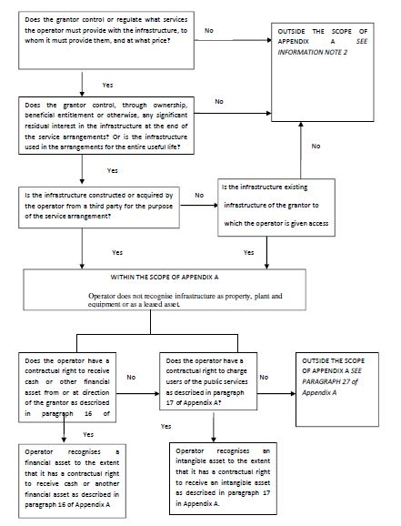

MINISTRY OF CORPORATE AFFAIRS
NOTIFICATION
New Delhi, the 30th March, 2016
G.S.R. 365 (E).-In exercise of the powers conferred by section 133 read with section 469 of the Companies Act, 2013 (18 of 2013) and sub-section (1) of section 210A of the Companies Act, 1956 (1 of 1956), the Central Government, in consultation with the National Advisory Committee on Accounting Standards, hereby makes the following rules to amend the Companies (Indian Accounting Standards) Rules, 2015, namely:-
1. Short title and commencement.-(1) These rules may be called the Companies (Indian Accounting Standards) (Amendment) Rules, 2016.
(2) They shall come into force on the date of their publication in the Official Gazette.
2. In the Companies (Indian Accounting Standards) Rules, 2015 (hereinafter referred to as the principal rules) in rule 2, in sub-rule (1), after clause (f), the following clause shall be inserted, namely:-
'(g) "Non-Banking Financial Company" means a Non-Banking Financial Company as defined in clause (f) of section 45-I of the Reserve Bank of India Act, 1934 and includes Housing Finance Companies, Merchant Banking companies, Micro Finance Companies, Mutual Benefit Companies, Venture Capital Fund Companies, Stock Broker or Sub-Broker Companies, Nidhi Companies, Chit Companies, Securitisation and Reconstruction Companies, Mortgage Guarantee Companies, Pension Fund Companies, Asset Management Companies and Core Investment Companies.'.
3. In the principal rules, in rule 4,-
(I) in sub-rule (1),-
(a) in clause (i), for the words "any company" the words " any company and its holding, subsidiary, joint venture or associate company" shall be substituted;
(b) after clause (iii), the following clauses shall be inserted, namely:-
" (iv) Notwithstanding the requirement of clauses (i) to (iii), Non-Banking Financial Companies (NBFCs) shall comply with the Indian Accounting Standards (Ind ASs) in preparation of their financial statements and audit respectively, in the following manner, namely:-
(a) The following NBFCs shall comply with the Indian Accounting Standards (Ind AS) for accounting periods beginning on or after the 1st April, 2018, with comparatives for the periods ending on 31st March, 2018, or thereafter-
(A) NBFCs having net worth of rupees five hundred crore or more;
(B) holding, subsidiary, joint venture or associate companies of companies covered under item (A), other than those already covered under clauses (i), (ii) and (iii) of sub-rule (1) of rule 4.
(b) The following NBFCs shall comply with the Indian Accounting Standards (Ind AS) for accounting periods beginning on or after the 1st April, 2019, with comparatives for the periods ending on 31stMarch, 2019, or thereafter-
(A) NBFCs whose equity or debt securities are listed or in the process of listing on any stock exchange in India or outside India and having net worth less than rupees five hundred crore;
(B) NBFCs, that are unlisted companies, having net worth of rupees two-hundred and fifty crore or more but less than rupees five hundred crore; and
(C) holding, subsidiary, joint venture or associate companies of companies covered under item (A) or item (B) of sub-clause (b), other than those already covered in clauses (i), (ii) and (iii) of sub-rule (1) or item (B) of sub-clause (a) of clause (iv).
Explanation.- For the purposes of clause (iv), if in a group of Companies, some entities apply Accounting Standards specified in the Annexure to the Companies (Accounting Standards) Rules, 2006 and others apply accounting standards as specified in the Annexure to these rules, in such cases, for the purpose of individual financial statements, the entities should apply respective standards applicable to them. For preparation of consolidated financial statements, the following conditions are to be followed, namely:-
(i) where an NBFC is a parent (at ultimate level or at intermediate level), and prepares consolidated financial statements as per Accounting Standards specified in the Annexure to the Companies (Accounting Standards) Rules, 2006, and its subsidiaries, associates and joint ventures, if covered by clause (i), (ii) and (iii) of sub-rule (1) has to provide the relevant financial statement data in accordance with the accounting policies followed by the parent company for consolidation purposes (until the NBFC is covered under clause (iv) of sub-rule (1);
(ii) where a parent is a company covered under clause (i), (ii) and (iii) of sub-rule (1) and has an NBFC subsidiary, associate or a joint venture, the parent has to prepare Ind AS-compliant consolidated financial statements and the NBFC subsidiary, associate and a joint venture has to provide the relevant financial statement data in accordance with the accounting policies followed by the parent company for consolidation purposes (until the NBFC is covered under clause (iv) of sub-rule (1).
(v) Notwithstanding clauses (i) to (iv), the holding, subsidiary, joint venture or associate companies of
Scheduled commercial banks (excluding RRBs) would be required to prepare Ind AS based financial statements for accounting periods beginning from 1st April, 2018 onwards, with comparatives for the periods ending 31st March, 2018 or thereafter:";
(II) in sub-rule (2), for the words brackets and figure "sub-rule (1)'' the words, brackets and figures "clause (i), (ii) and (iii) of sub-rule (1)'', shall be substituted, wherever they occur;
(III) after sub-rule (2), the following sub-rule shall be inserted, namely:-
"(2A) For the purposes of calculation of net worth of Non-Banking Financial Companies covered under clause
(iv) of sub-rule (1), the following principles shall apply, namely:-
(a) the net worth shall be calculated in accordance with the stand-alone financial statements of the NBFCs as on 31st March, 2016 or the first audited financial statements for accounting period which ends after that date;
(b) for NBFCs which are not in existence on 31st March, 2016 or an existing NBFC falling first time, after 31st March, 2016, the net worth shall be calculated on the basis of the first audited stand-alone financial statements ending after that date, in respect of which it meets the thresholds.
Explanation.- For the purposes of sub-clause (b), the NBFCs meeting the specified thresholds given in sub-clause (b) of clause (iv) of sub-rule (1) for the first time at the end of an accounting year shall apply Indian Accounting Standards (Ind ASs) from the immediate next accounting year in the manner specified in sub-clause (b) of clause (iv) of sub-rule (1).
Illustration - (i) The NBFCs meeting threshold for the first time as on 31st March, 2019 shall apply Ind AS for the financial year 2019-20 onwards.
(ii) The NBFCs meeting threshold for the first time as on 31st March, 2020 shall apply Ind AS for the financial year 2020-21 onwards and so on.'';
(IV) in the Explanation to sub-rule (4),-
(a) after the words, figures and letters 'the Indian Accounting Standards (Ind AS) for the accounting period beginning on 1stApril, 2016' the words, figures and letters ''or 1stApril, 2018, as the case may be'' shall be inserted;
(b) after the words, figures and letters 'effective for the financial year ending on 31st March, 2017' the words, figures and letters 'or 31st March, 2019, as the case may be', shall be inserted;
(V) in the proviso to sub-rule (5), sub-rule (6) and sub-rule (9), the words 'either voluntarily or mandatorily' shall be omitted.
4. for rule 5, the following rule shall be substituted, namely:-
"(5) The Banking Companies and Insurance Companies shall apply the Ind ASs as notified by the Reserve Bank of India (RBI) and Insurance Regulatory Development Authority (IRDA) respectively. An insurer or insurance company shall however, provide Ind AS compliant financial statement data for the purposes of preparation of consolidated financial statements by its parent or investor or venturer, as required by the parent or investor or venturer to comply with the requirements of these rules.''.
5. In the principal rules, in the "Annexure", under the heading "B. Indian Accounting Standards (Ind AS)" in "Indian Accounting Standard (Ind AS) 101", -
(i) for paragraph 30, the following paragraph shall be substituted, namely:-
''30 If an entity uses fair value in its opening Ind AS Balance Sheet as deemed cost for an item of property, plant and equipment or an intangible asset (see paragraphs D5 and D7), the entity's first Ind AS financial statements shall disclose, for each line item in the opening Ind AS Balance Sheet:
(a) the aggregate of those fair values; and
(b) the aggregate adjustment to the carrying amounts reported under previous GAAP. '' ;
(ii) in Appendix D,-
(a) in paragraph D1, for item (m), the following item shall be substituted, namely:-
''(m) financial assets or intangible assets accounted for in accordance with Appendix A to Ind AS 11 Service Concession Arrangements (paragraph D22); '';
(b) for paragraph D7, the following paragraph shall be substituted, namely:-
''D7 The elections in paragraphs D5 and D6 are also available for:
(a) Omitted*;
(b) intangible assets that meet:
(i) the recognition criteria in Ind AS 38 (including reliable measurement of original cost); and
(ii) the criteria in Ind AS 38 for revaluation (including the existence of an active market).
An entity shall not use these elections for other assets or for liabilities.'';
(c) in the opening paragraph of paragraph D22, starting with 'A first-time' and ending with 'Ind AS 115' and its heading, the following heading and opening paragraph shall be substituted, namely:-
''Financial assets or intangible assets accounted for in accordance with Appendix A, Service
Concession Arrangements to Ind AS 11''
D22 A first-time adopter may apply the following provisions while applying the Appendix A to Ind AS 11: '';
(d) Paragraphs D34, D34AA and D35 shall be omitted*;
(e) after paragraph D35AA, the following paragraph shall be inserted, namely:-
''Transfers of Assets from Customers
D36 An entity shall apply Appendix C of Ind AS 18 prospectively to transfers of assets from customers received on or after the transition date. Earlier application is permitted provided the valuations and other information needed to apply the Appendix to past transfers were obtained at the time those transfers occurred. An entity shall disclose the date from which the Appendix D of Ind AS 18 was applied.'';
(iii) In Appendix 1,-
(a) for paragraph 10, the following paragraph shall be substituted namely:-
''10. IFRS 9 Financial Instruments is effective from annual period beginning on or after January 1, 2018. As the above said standard is not yet effective consequential amendments due to this standard have not been incorporated in current version of IFRS 1. However, corresponding Ind AS 109, Financial Instruments has been issued with consequential amendments in other Ind ASs including Ind AS 101. Accordingly, its consequential amendments to Ind AS 109 have been incorporated in Ind AS 101. '';
(b)after paragraph 12, following paragraphs shall be inserted namely;-
* Refer Appendix 1
* Refer Appendix 1
''13. IAS 40, Investment Property permits both cost model and fair value model (except in some situations) for measurement of investment properties after initial recognition. Ind AS 40, Investment Property permits only the cost model. As a consequence, paragraph 30 is amended and paragraph D7
(a) is deleted.
14. Paragraphs D34-D35 deal with Ind AS 115, Revenue from Contracts with Customers. As Ind AS 115 is not yet effective, therefore, these paragraphs have not been included in this standard. However, in order to maintain consistency with paragraph numbers of IFRS 1, the paragraph numbers are retained in Ind AS 101. ''.
6. In the principal rules, in the "Annexure", under the heading "B. Indian Accounting Standards (Ind AS)", in "Indian Accounting Standard (Ind AS) 103", for paragraphs 56, the following paragraph shall be substituted, namely:-
''56 After initial recognition and until the liability is settled, cancelled or expires, the acquirer shall measure a contingent liability recognised in a business combination at the higher of:
(a) the amount that would be recognised in accordance with Ind AS 37; and
(b) the amount initially recognised less, if appropriate, cumulative amortisation recognised in accordance with Ind AS 18, Revenue.
This requirement does not apply to contracts accounted for in accordance with Ind AS 109. ''.
7. In the principal rules, in the "Annexure", under the heading "B. Indian Accounting Standards (Ind AS)", in "Indian Accounting Standard (Ind AS) 104",
(i) in paragraph 4, for item (a), the following item shall be substituted, namely:-
''(a) product warranties issued directly by a manufacturer, dealer or retailer (see Ind AS 18, Revenue, and
Ind AS 37, Provisions, Contingent Liabilities and Contingent Assets). '';
(ii) in paragraph 4, for item (c), the following item shall be substituted, namely:-
''(c) contractual rights or contractual obligations that are contingent on the future use of, or right to use, a non-financial item (for example, some licence fees, royalties, contingent lease payments and similar items), as well as a lessee's residual value guarantee embedded in a finance lease (see Ind AS 17, Leases, Ind AS 18, Revenue, and Ind AS 38, Intangible Assets). '';
(iii) in Appendix B,-
(a) in paragraph B7, for item (b), the following item shall be substituted, namely:-
''(b) If Ind AS 18, Revenue applied, the service provider would recognise revenue by reference to the stage of completion (and subject to other specified criteria). That approach is also acceptable under this Ind AS, which permits the service provider (i) to continue its existing accounting policies for these contracts unless they involve practices prohibited by paragraph 14 and (ii) to improve its accounting policies if so permitted by paragraphs 22-30.'';
(b) in paragraph B18, for item (h), the following item shall be substituted, namely:-
''(h) product warranties. Product warranties issued by another party for goods sold by a manufacturer, dealer or retailer are within the scope of this Ind AS. However, product warranties issued directly by a manufacturer, dealer or retailer are outside its scope, because they are within the scope of Ind AS 18 and Ind AS 37.'';
(c) for paragraph B21, the following paragraph shall be substituted, namely:-
''B21 If the contracts described in paragraph B19 do not create financial assets or financial liabilities, Ind AS 18 applies. Under Ind AS 18, revenue associated with a transaction involving the rendering of services is recognised by reference to the stage of completion of the transaction if the outcome of the transaction can be estimated reliably.''.
8. In the principal rules, in the "Annexure", under the heading "B. Indian Accounting Standards (Ind AS)", in "Indian Accounting Standard (Ind AS) 105", -
(i) for paragraph 26 and its heading, the following paragraph and its heading shall be substituted, namely:-
''Changes to a plan of sale or to a plan of distribution to owners''
26. If an entity has classified an asset (or disposal group) as held for sale or as held for distribution to owners, but the criteria in paragraphs 7-9 (for held for sale) or in paragraph 12A (for held for distribution to owners) are no longer met, the entity shall cease to classify the asset (or disposal group) as held for sale or held for distribution to owners (respectively). In such cases an entity shall follow the guidance in paragraphs 27-29 to account for this change except when paragraph 26A applies.'';
(ii) after paragraph 26, following paragraph shall be inserted namely:-
''26A. If an entity reclassifies an asset (or disposal group) directly from being held for sale to being held for distribution to owners, or directly from being held for distribution to owners to being held for sale, then the change in classification is considered a continuation of the original plan of disposal. The entity:
(a) shall not follow the guidance in paragraphs 27-29 to account for this change. The entity shall apply the classification, presentation and measurement requirements in this Ind AS that are applicable to the new method of disposal.
(b) shall measure the non-current asset (or disposal group) by following the requirements in paragraph 15 (if reclassified as held for sale) or 15A (if reclassified as held for distribution to owners) and recognise any reduction or increase in the fair value less costs to sell/costs to distribute of the non-current asset (or disposal group) by following the requirements in paragraphs 20-25.
(c) shall not change the date of classification in accordance with paragraphs 8 and 12A. This does not preclude an extension of the period required to complete a sale or a distribution to owners if the conditions in paragraph 9 are met.'';
(iii) for paragraph 27, the following paragraph shall be substituted, namely:-
''27. The entity shall measure a non-current asset (or disposal group) that ceases to be classified as held for sale or as held for distribution to owners (or ceases to be included in a disposal group classified as held for sale or as held for distribution to owners) at the lower of:
(a) its carrying amount before the asset (or disposal group) was classified as held for sale or as held for distribution to owners, adjusted for any depreciation, amortisation or revaluations that would have been recognised had the asset (or disposal group) not been classified as held for sale or as held for distribution to owners, and
(b) its recoverable amount at the date of the subsequent decision not to sell or distribute5.'';
(iv) for paragraph 28, the following paragraph shall be substituted, namely:-
''28 The entity shall include any required adjustment to the carrying amount of a non-current asset that ceases to be classified as held for sale or as held for distribution to owners in profit or loss6 from continuing operations in the period in which the criteria in paragraphs 7-9 or 12A, respectively, are no longer met. Financial statements for the periods since classification as held for sale or as held for distribution to owners shall be amended accordingly if the disposal group or non-current asset that ceases to be classified as held for sale or as held for distribution to owners is a subsidiary, joint operation, joint venture, associate, or a portion of an interest in a joint venture or an associate. The entity shall present that adjustment in the same caption in the statement of profit and loss used to present a gain or loss, if any, recognised in accordance with paragraph 37.'';
5 If the non-current asset is part of a
cash-generating unit, its recoverable amount is the carrying amount
that would have been recognised after the allocation of any impairment
loss arising on that cash-generating unit in accordance with Ind AS 36.
6 Unless the asset is property, plant and equipment or an intangible asset that had been revalued in accordance with Ind AS 16 or Ind AS 38 before classification as held for sale, in which case the adjustment shall be treated as a revaluation increase or decrease.
(v) for paragraph 29, the following paragraph shall be substituted, namely:-
''29 If an entity removes an individual asset or liability from a disposal group classified as held for sale, the remaining assets and liabilities of the disposal group to be sold shall continue to be measured as a group only if the group meets the criteria in paragraphs 7-9. If an entity removes an individual asset or liability from a disposal group classified as held for distribution to owners, the remaining assets and liabilities of the disposal group to be distributed shall continue to be measured as a group only if the group meets the criteria in paragraph 12A. Otherwise, the remaining non-current assets of the group that individually meet the criteria to be classified as held for sale (or as held for distribution to owners) shall be measured individually at the lower of their carrying amounts and fair values less costs to sell (or costs to distribute) at that date. Any non-current assets that do not meet the criteria for held for sale shall cease to be classified as held for sale in accordance with paragraph 26. Any non-current assets that do not meet the criteria for held for distribution to owners shall cease to be classified as held for distribution to owners in accordance with paragraph 26.''.
9. In the principal rules, in the "Annexure", under the heading "B. Indian Accounting Standards (Ind AS)", in "Indian Accounting Standard (Ind AS) 107",-
(i) for paragraph 5A, the following paragraph shall be substituted, namely:-
''5A The credit risk disclosure requirements in paragraph 35A-35N apply to those rights that Ind AS 18, Revenue specifies are accounted for in accordance with Ind AS 109 for the purposes of recognizing impairment gains or losses. Any reference to financial assets or financial instruments in these paragraphs shall include those rights unless otherwise specified'';
(ii) for paragraph 21, the following paragraph shall be substituted, namely:-
''21 In accordance with paragraph 117 of Ind AS 1, Presentation of Financial Statements, an entity discloses its significant accounting policies, comprising the measurement basis (or bases) used in preparing the financial statements and the other accounting policies used that are relevant to an understanding of the financial statements.'';
(iii) in Appendix B, -
(a) in paragraph B5, for the opening paragraph starting with 'Paragraph 21 requires' and ending with 'disclosure may include:', the following paragraph shall be substituted, namely:-
''B5 Paragraph 21 requires disclosure of the measurement basis (or bases) used in preparing the financial statements and the other accounting policies used that are relevant to an understanding of the financial statements. For financial instruments, such disclosure may include:'';
(b) in paragraph B5, for the last paragraph starting with 'Paragraph 122 of' and ending with 'in the financial statements.' the following paragraph shall be substituted, namely:-
''Paragraph 122 of Ind AS 1 also requires entities to disclose, along with its significant accounting policies or other notes, the judgements, apart from those involving estimations, that management has made in the process of applying the entity's accounting policies and that have the most significant effect on the amounts recognised in the financial statements.'';
(c) for paragraph B30, the following paragraph shall be substituted, namely:-
''B30 An entity does not have a continuing involvement in a transferred financial asset if, as part of the transfer, it neither retains any of the contractual rights or obligations inherent in the transferred financial asset nor acquires any new contractual rights or obligations relating to the transferred financial asset. An entity does not have continuing involvement in a transferred financial asset if it has neither an interest in the future performance of the transferred financial asset nor a responsibility under any circumstances to make payments in respect of the transferred financial asset in the future. The term 'payment' in this context does not include cash flows of the transferred financial asset that an entity collects and is required to remit to the transferee.'';
(d) after paragraph B30, the following paragraph shall be inserted, namely:-
''B30A When an entity transfers a financial asset, the entity may retain the right to service that financial asset for a fee that is included in, for example, a servicing contract. The entity assesses the servicing contract in accordance with the guidance in paragraphs 42C and B30 to decide whether the entity has continuing involvement as a result of the servicing contract for the purposes of the disclosure requirements. For example, a servicer will have continuing involvement in the transferred financial asset for the purposes of the disclosure requirements if the servicing fee is dependent on the amount or timing of the cash flows collected from the transferred financial asset. Similarly, a servicer has continuing involvement for the purposes of the disclosure requirements if a fixed fee would not be paid in full because of non-performance of the transferred financial asset. In these examples, the servicer has an interest in the future performance of the transferred financial asset. This assessment is independent of whether the fee to be received is expected to compensate the entity adequately for performing the servicing.'';
(iv) in Appendix C, for paragraph 2, the following paragraph shall be substituted, namely:-
''2. Appendix A, Service Concession Arrangements, contained in Ind AS 11, Construction Contracts.''.
10. In the principal rules, in the "Annexure", under the heading "B. Indian Accounting Standards (Ind AS)", in "Indian Accounting Standard (Ind AS) 109",
(i) in paragraph 2.1, for item (j), the following item shall be substituted, namely:-
''(j) rights and obligations within the scope of Ind AS 11, Construction Contracts, and Ind AS 18, Revenue, that are financial instruments, except for those that Ind AS 11 and Ind AS 18 specify are accounted for in accordance with this Standard. '';
(ii) for paragraph 2.2, the following paragraph shall be substituted, namely:-
''2.2 The impairment requirements of this Standard shall be applied to those rights that Ind AS 11 and Ind AS 18 specify are accounted for in accordance with this Standard for the purposes of recognising impairment gains or losses. '';
(iii) in paragraph 4.2.1, in item (c), for sub-item(ii), the following sub-item shall be substituted, namely:-
''(ii) the amount initially recognised (see paragraph 5.1.1) less, when appropriate, the cumulative amount of income recognised in accordance with the principles of Ind AS 18.'';
(iv) in paragraph 4.2.1, in item (d), for sub-item(ii), the following sub-item shall be substituted, namely:-
''(ii) the amount initially recognised (see paragraph 5.1.1) less, when appropriate, the cumulative amount of income recognised in accordance with the principles of Ind AS 18. '';
(v) for paragraph 5.1.1, the following paragraph shall be substituted, namely:-
''5.1.1. At initial recognition, an entity shall measure a financial asset or financial liability at its fair value plus or minus, in the case of a financial asset or financial liability not at fair value through profit or loss, transaction costs that are directly attributable to the acquisition or issue of the financial asset or financial liability. '';
(vi) paragraph 5.1.3 shall be omitted*,
* Refer Appendix 1
(vii) for paragraph 5.5.1, the following paragraph shall be substituted, namely:-
''5.5.1 An entity shall recognise a loss allowance for expected credit losses on a financial asset that is measured in accordance with paragraphs 4.1.2 or 4.1.2A, a lease receivable, a loan commitment and a financial guarantee contract to which the impairment requirements apply in accordance with paragraphs 2.1(g), 4.2.1(c) or 4.2.1(d). '';
(viii) for paragraph 5.5.15, the following paragraph shall be substituted, namely:-
''5.5.15 Despite paragraphs 5.5.3 and 5.5.5, an entity shall always measure the loss allowance at an
amount equal to lifetime expected credit losses for:
(a) trade receivables or any contractual right to receive cash or another financial asset that result from transactions that are within the scope of Ind AS 11 and Ind AS 18.
(b) lease receivables that result from transactions that are within the scope of Ind AS 17, if the entity chooses as its accounting policy to measure the loss allowance at an amount equal to lifetime expected credit losses. That accounting policy shall be applied to all lease receivables but may be applied separately to finance and operating lease receivables. '';
(ix) in Appendix A,-
(a) the definition of 'contract assets' shall be omitted.
(b) for the last paragraph, the following paragraph shall be substituted, namely:-
'' The following terms are defined in paragraph 11 of Ind AS 32, Appendix A of Ind AS 107 or Appendix A of Ind AS 113 and are used in this Standard with the meanings specified in Ind AS 32, Ind AS 107 or Ind AS 113:
(a) credit risk;1
(b) equity instrument;
(c) fair value;
(d) financial asset;
(e) financial instrument;
(f) financial liability .'';
(x) in Appendix B,
(a) for paragraph B2.2, the following paragraph shall be substituted, namely:-
''B2.2 This Standard does not change the requirements relating to royalty agreements based on the volume of sales or service revenues that are accounted for under Ind AS 18, Revenue. '';
(b) in paragraph B2.5, in item (a), for sub-item(ii), the following sub-item shall be substituted, namely:-
''(ii) the amount initially recognised less, when appropriate, the cumulative amount of income recognised in accordance with Ind AS 18 (see paragraph 4.2.1(c)). '';
(c) in paragraph B2.5, for item (c), the following item shall be substituted, namely:-
''(c) If a financial guarantee contract was issued in connection with the sale of goods, the issuer applies Ind AS 18 in determining when it recognises the revenue from the guarantee and from the sale of goods. '';
1This term (as defined in Ind AS107) is used in the requirements for presenting the effects of changes in credit risk on liabilities designated as at fair value through profit or loss (see paragraph 5.7.7).
(d) in paragraph B3.2.13, for item (a), the following item shall be substituted, namely:-
''(a) If a guarantee provided by an entity to pay for default losses on a transferred asset prevents the transferred asset from being derecognised to the extent of the continuing involvement, the transferred asset at the date of the transfer is measured at the lower of (i) the carrying amount of the asset and (ii) the maximum amount of the consideration received in the transfer that the entity could be required to repay ('the guarantee amount'). The associated liability is initially measured at the guarantee amount plus the fair value of the guarantee (which is normally the consideration received for the guarantee). Subsequently, the initial fair value of the guarantee is recognised in profit or loss on a time proportion basis (see Ind AS 18) and the carrying value of the asset is reduced by any loss allowance.'';
(e) for paragraph B5.4.3, the following paragraph shall be substituted namely:-
''B5.4.3 Fees that are not an integral part of the effective interest rate of a financial instrument and are accounted for in accordance with Ind AS 18 include:
(a) fees charged for servicing a loan;
(b) commitment fees to originate a loan when the loan commitment is not measured in accordance with paragraph 4.2.1(a) and it is unlikely that a specific lending arrangement will be entered into; and
(c) loan syndication fees received by an entity that arranges a loan and retains no part of the loan package for itself (or retains a part at the same effective interest rate for comparable risk as other participants).'';
(xi) in Appendix E, for paragraph 2, the following paragraph shall be substituted namely:-
''2. Appendix A, Service Concession Arrangements contained in Ind AS 11, Construction Contracts. '';
(xii) in Appendix 1, after paragraph 2, the following paragraph shall be inserted namely:-
''3. Following paragraphs deal with Ind AS 115, Revenue from Contracts with Customers. As Ind AS 115 is not yet effective, these paragraphs have not been included in this standard. However, in order to maintain consistency with paragraph numbers of IFRS 9, the paragraph numbers are retained in Ind AS 109:
(i) Paragraph 5.1.3
(ii) 5.5.15 (a)(i)
(iii) 5.2.15(a)(ii) '';
11. In the principal rules, in the "Annexure", under the heading "B. Indian Accounting Standards (Ind AS)", in " Indian Accounting Standard (Ind AS) 110",-
(i) in paragraph 4, in item (a), for sub-item (iv), the following sub-item shall be substituted, namely:-
''(iv) its ultimate or any intermediate parent produces financial statements that are available for public use and comply with Ind ASs, in which subsidiaries are consolidated or are measured at fair value through profit or loss in accordance with this Ind AS. '';
(ii) in paragraph 4, item (b), shall be omitted*;
(iii) in paragraph 4, item (c), shall be omitted*;
(iv) after paragraph 4, the following paragraphs shall be inserted, namely:-
''4A This Ind AS does not apply to post-employment benefit plans or other long-term employee benefit plans to which Ind AS 19, Employee Benefits, applies.
4B A parent that is an investment entity shall not present consolidated financial statements if it is required, in accordance with paragraph 31 of this Ind AS, to measure all of its subsidiaries at fair value through profit or loss.'';
(v) for paragraph 32 , the following paragraph shall be substituted, namely:-
* Refer Appendix 1
* Refer Appendix 1
''32. Notwithstanding the requirement in paragraph 31, if an investment entity has a subsidiary that is not itself an investment entity and whose main purpose and activities are providing services that relate to the investment entity's investment activities (see paragraphs B85C-B85E), it shall consolidate that subsidiary in accordance with paragraphs 19-26 of this Ind AS and apply the requirements of Ind AS 103 to the acquisition of any such subsidiary.'';
(vi) In Appendix B,-
(a)for paragraph B85C, the following paragraph shall be substituted, namely:-
''B85C An investment entity may provide investment-related services (eg investment advisory services, investment management, investment support and administrative services), either directly or through a subsidiary, to third parties as well as to its investors, even if those activities are substantial to the entity, subject to the entity continuing to meet the definition of an investment entity.'';
(b) for paragraph B85E, the following paragraph shall be substituted namely:-
''B85E If an investment entity has a subsidiary that is not itself an investment entity and whose main purpose and activities are providing investment-related services or activities that relate to the investment entity's investment activities, such as those described in paragraphs B85C-B85D, to the entity or other parties, it shall consolidate that subsidiary in accordance with paragraph 32. If the subsidiary that provides the investment-related services or activities is itself an investment entity, the investment entity parent shall measure that subsidiary at fair value through profit or loss in accordance with paragraph 31.'';
(vii) in Appendix 1, after paragraph 3, following paragraph shall be inserted, namely:-
''4. Following paragraph numbers appear as 'Deleted' in IFRS 10. In order to maintain consistency with paragraph numbers of IFRS 10, the paragraph numbers are retained in Ind AS 110:
(i) Paragraph 4(b)
(ii) Paragraph 4(c)''.
12. In the principal rules, in the "Annexure", under the heading "B. Indian Accounting Standards (Ind AS)", in "Indian Accounting Standard (Ind AS) 112", in paragraph 6, for item (b), the following item shall be substituted, namely:-
''(b) an entity's separate financial statements to which Ind AS 27, Separate Financial Statements,
applies. However:
(i) if an entity has interests in unconsolidated structured entities and prepares separate financial statements as its only financial statements, it shall apply the requirements in paragraphs 24-31 when preparing those separate financial statements.
(ii) an investment entity that prepares financial statements in which all of its subsidiaries are measured at fair value through profit or loss in accordance with paragraph 31 of Ind AS 110 shall present the disclosures relating to investment entities required by this Ind AS.''.
13. In the principal rules, in the "Annexure", under the heading "B. Indian Accounting Standards (Ind AS)", Indian Accounting Standard (Ind AS) 115 shall be omitted.
14. In the principal rules, in the "Annexure", under the heading "B. Indian Accounting Standards (Ind AS)", in "Indian Accounting Standard (Ind AS) 1",
(i) in paragraph 10, for following item(e), the following item shall be substituted namely:-
''(e) notes, comprising significant accounting policies and other explanatory information;'';
(ii) after paragraph 30, following paragraph shall be inserted, namely:-
''30A When applying this and other Ind ASs an entity shall decide, taking into consideration all relevant facts and circumstances, how it aggregates information in the financial statements, which include the notes. An entity shall not reduce the understandability of its financial statements by obscuring material information with immaterial information or by aggregating material items that have different natures or functions.'';
(iii) for paragraph 31, the following paragraph shall be substituted, namely:-
''31 Some Ind ASs specify information that is required to be included in the financial statements, which include the notes. An entity need not provide a specific disclosure required by an Ind AS if the information resulting from that disclosure is not material except when required by law. This is the case even if the Ind AS contains a list of specific requirements or describes them as minimum requirements. An entity shall also consider whether to provide additional disclosures when compliance with the specific requirements in Ind AS is insufficient to enable users of financial statements to understand the impact of particular transactions, other events and conditions on the entity's financial position and financial performance.'';
(iv) for paragraph 34, the following paragraph shall be substituted, namely:-
''34 Ind AS 18, Revenue, defines revenue and requires an entity to measure it at the fair value of the consideration received or receivable, taking into account the amount of any trade discounts and volume rebates the entity allows. An entity undertakes, in the course of its ordinary activities, other transactions that do not generate revenue but are incidental to the main revenue-generating activities. An entity presents the results of such transactions, when this presentation reflects the substance of the transaction or other event, by netting any income with related expenses arising on the same transaction. For example:
(a) an entity presents gains and losses on the disposal of non-current assets, including investments and operating assets, by deducting from the proceeds on disposal the carrying amount of the asset and related selling expenses; and
(b) an entity may net expenditure related to a provision that is recognised in accordance with Ind AS 37, Provisions, Contingent Liabilities and Contingent Assets, and reimbursed under a contractual arrangement with a third party (for example, a supplier's warranty agreement) against the related reimbursement. '';
(v) in paragraph 54, for the opening paragraph opening with 'As a minimum, the' and ending with 'following amounts:', the following paragraph shall be substituted, namely:-
''54 The balance sheet shall include line items that present the following amounts:'';
(vi) for paragraph 55, the following paragraph shall be substituted, namely:-
''55 An entity shall present additional line items (including by disaggregating the line items listed in paragraph 54), headings and subtotals in the balance sheet when such presentation is relevant to an understanding of the entity's financial position.'';
(vii) after paragraph 55, the following paragraph shall be inserted, namely:-
''55A When an entity presents subtotals in accordance with paragraph 55, those subtotals shall:
(a) be comprised of line items made up of amounts recognised and measured in accordance with Ind AS;
(b) be presented and labelled in a manner that makes the line items that constitute the subtotal clear and understandable;
(c) be consistent from period to period, in accordance with paragraph 45; and
(d) not be displayed with more prominence than the subtotals and totals required in Ind AS for the balance sheet.'';
(viii) for paragraph 82A, the following paragraph shall be substituted, namely:-
''82A The other comprehensive income section shall present line items for the amounts for the period of:
(a) items of other comprehensive income (excluding amounts in paragraph (b)), classified by nature and grouped into those that, in accordance with other Ind ASs:
(i) will not be reclassified subsequently to profit or loss; and
(ii) will be reclassified subsequently to profit or loss when specific conditions are met.
(b) the share of the other comprehensive income of associates and joint ventures accounted for using the equity method, separated into the share of items that, in accordance with other Ind ASs:
(i) will not be reclassified subsequently to profit or loss; and
(ii) will be reclassified subsequently to profit or loss when specific conditions are met.'';
(ix) for paragraph 85, the following paragraph shall be substituted, namely:-
''85 An entity shall present additional line items (including by disaggregating the line items listed in paragraph 82), headings and subtotals in the statement of profit and loss, when such presentation is relevant to an understanding of the entity's financial performance.'';
(x) after paragraph 85, the following paragraphs shall be inserted, namely:-
''85A When an entity presents subtotals in accordance with paragraph 85, those subtotals shall:
(a) be comprised of line items made up of amounts recognised and measured in accordance with Ind AS;
(b) be presented and labelled in a manner that makes the line items that constitute the subtotal clear and understandable;
(c) be consistent from period to period, in accordance with paragraph 45; and
(d) not be displayed with more prominence than the subtotals and totals required in Ind AS for the statement of profit and loss.
85B An entity shall present the line items in the statement of profit and loss that reconcile any subtotals presented in accordance with paragraph 85 with the subtotals or totals required in Ind AS for such statement.'';
(xi) for paragraph 113, the following paragraph shall be substituted, namely:-
''113 An entity shall present notes in a systematic manner. In determining a systematic manner, the entity shall consider the effect on the understandability and comparability of its financial statements. An entity shall cross-reference each item in the balance sheet and in the statement of profit and loss, and in the statements of changes in equity and of cash flows to any related information in the notes.'';
(xii) for paragraph 114, the following paragraph shall be substituted, namely:-''114 Examples of systematic ordering or grouping of the notes include:
(a) giving prominence to the areas of its activities that the entity considers to be most relevant to an understanding of its financial performance and financial position, such as grouping together information about particular operating activities;
(b) grouping together information about items measured similarly such as assets measured at fair value; or
(c) following the order of the line items in the statement of profit and loss and the balance sheet, such as:
(i) statement of compliance with Ind ASs (see paragraph 16);
(ii) significant accounting policies applied (see paragraph 117);
(iii) supporting information for items presented in the balance sheet and in the statement of profit and loss, and in the statements of changes in equity and of cash flows, in the order in which each statement and each line item is presented; and
(iv) other disclosures, including:
(1) contingent liabilities (see Ind AS 37) and unrecognised contractual commitments; and
(2) non-financial disclosures, eg the entity's financial risk management objectives and policies (see Ind AS 107).'';
(xiii) paragraph 115 shall be omitted*;
(xiv) for paragraph 117, the following paragraph shall be substituted, namely:-
''117 An entity shall disclose its significant accounting policies comprising:
(a)the measurement basis (or bases) used in preparing the financial statements; and
(b)the other accounting policies used that are relevant to an understanding of the financial statements.'';
(xv) for paragraph 119, the following paragraph shall be substituted, namely:-
''119 In deciding whether a particular accounting policy should be disclosed, management considers whether disclosure would assist users in understandi ng how transactions, other events and conditions are reflected in reported financial performance and financial position. Each entity considers the nature of its operations and the policies that the users of its financial statements w o u l d expect to be disclosed for that type of entity. Disclosure of particular accounting policies is especially useful to users when those policies are selected from alternatives allowed in Ind ASs. An example is disclosure of a regular way purchase or sale of financial assets using either trade date accounting or settlement date accounting (see Ind AS 109, Financial Instruments). Some Ind ASs specifically require disclosure of particular accounting policies, including choices made by management between different policies they allow. For example, Ind AS 16 requires disclosure of the measurement bases used for classes of property, plant and equipment.'';
(xvi) paragraph 120 shall be omitted*;
(xvii) for paragraph 122, the following shall be substituted, namely:-
''122 An entity shall disclose, along with its significant accounting policies or other notes, the judgements, apart from those involving estimations (see paragraph 125), that management has made in the process of applying the entity's accounting policies and that have the most significant effect on the amounts recognised in the financial statements.'';
(xviii) in Appendix 1, for paragraph 6, following paragraph shall be substituted, namely:-
''6. Following paragraph numbers appear as 'Deleted' in IAS 1. In order to maintain consistency with paragraph numbers of IAS 1, the paragraph numbers are retained in Ind AS 1.
(i) paragraph 12
(ii) paragraphs 39-40
(iii) paragraph 81
(iv) paragraph 82(e)
(v) paragraphs 82(f)-(i)
(vi) paragraphs 83-84
(vii) paragraph 106(c)
(viii) paragraph 123(a)
(ix) paragraph 115
(x) paragraph 120'';
3 Refer Appendix 1
3 Refer Appendix 1
15. In the principal rules, in the "Annexure", under the heading "B. Indian Accounting Standards (Ind AS)", in "Indian Accounting Standard (Ind AS) 2", -
(i) in paragraph 2, for item (a), the following item shall be substituted, namely:-
''(a) work in progress arising under construction contracts, including directly related service contracts (see Ind AS 11, Construction Contracts);'';
(ii) for paragraph 8, the following paragraph shall be substituted, namely:-
''8. Inventories encompass goods purchased and held for resale including, for example, merchandise purchased by a retailer and held for resale, or land and other property held for resale. Inventories also encompass finished goods produced, or work in progress being produced, by the entity and include materials and supplies awaiting use in the production process. In the case of a service provider, inventories include the costs of the service, as described in paragraph 19, for which the entity has not yet recognised the related revenue (see Ind AS 18, Revenue). '';
(iii) for paragraph 19, the following paragraph shall be substituted, namely:-
''19. To the extent that service providers have inventories, they measure them at the costs of their production. These costs consist primarily of the labour and other costs of personnel directly engaged in providing the service, including supervisory personnel, and attributable overheads. Labour and other costs relating to sales and general administrative personnel are not included but are recognised as expenses in the period in which they are incurred. The cost of inventories of a service provider does not include profit margins or non-attributable overheads that are often factored into prices charged by service providers.'';
(iv) for paragraph 29, the following paragraph shall be substituted, namely:-
''29. Inventories are usually written down to net realisable value item by item. In some circumstances, however, it may be appropriate to group similar or related items. This may be the case with items of inventory relating to the same product line that have similar purposes or end uses, are produced and marketed in the same geographical area, and cannot be practicably evaluated separately from other items in that product line. It is not appropriate to write inventories down on the basis of a classification of inventory, for example, finished goods, or all the inventories in a particular operating segment. Service providers generally accumulate costs in respect of each service for which a separate selling price is charged. Therefore, each such service is treated as a separate item. '';
(v) for paragraph 37, the following paragraph shall be substituted, namely:-
''37. Information about the carrying amounts held in different classifications of inventories and the extent of the changes in these assets is useful to financial statement users. Common classifications of inventories are merchandise, production supplies, materials, work in progress and finished goods. The inventories of a service provider may be described as work in progress. '';
(vi) in Appendix 1, paragraph 2 shall be omitted.
16. In the principal rules, in the "Annexure", under the heading "B. Indian Accounting Standards (Ind AS)", after Indian Accounting Standard (Ind AS) 10, the following Indian Accounting Standard shall be inserted, namely:-
''Indian Accounting Standard (Ind AS) 11
Construction Contracts
(This Indian Accounting Standard includes paragraphs set in bold type and plain type, which have equal authority. Paragraphs in bold type indicate the main principles.)
Objective
The objective of this Standard is to prescribe the accounting treatment of revenue and costs associated with construction contracts. Because of the nature of the activity undertaken in construction contracts, the date at which the contract activity is entered into and the date when the activity is completed usually fall into different accounting periods. Therefore, the primary issue in accounting for construction contracts is the allocation of contract revenue and contract costs to the accounting periods in which construction work is performed. This Standard uses the recognition criteria established in the Framework for the Preparation and Presentation of Financial Statements issued by the Institute of Chartered Accountants of India to determine when contract revenue and contract costs should be recognised as revenue and expenses in the statement of profit and loss. It also provides practical guidance on the application of these criteria.
Scope
1. This Standard shall be applied in accounting for construction contracts in the financial statements of contractors.
1A The impairment of any contractual right to receive cash or another financial asset arising from this Standard shall be dealt in accordance with Ind AS 109, Financial Instruments.
2. *
Definitions
3. The following terms are used in this Standard with the meanings specified:
A construction contract is a contract specifically negotiated for the construction of an asset or a combination of assets that are closely interrelated or interdependent in terms of their design, technology and function or their ultimate purpose or use.
A fixed price contract is a construction contract in which the contractor agrees to a fixed contract price, or a fixed rate per unit of output, which in some cases is subject to cost escalation clauses.
A cost plus contract is a construction contract in which the contractor is reimbursed for allowable or otherwise defined costs, plus a percentage of these costs or a fixed fee.
4. A construction contract may be negotiated for the construction of a single asset such as a bridge, building, dam, pipeline, road, ship or tunnel. A construction contract may also deal with the construction of a number of assets which are closely interrelated or interdependent in terms of their design, technology and function or their ultimate purpose or use; examples of such contracts include those for the construction of refineries and other complex pieces of plant or equipment.
5. For the purposes of this Standard, construction contracts include:
(a) contracts for the rendering of services which are directly related to the construction of the asset, for example, those for the services of project managers and architects; and
(b) contracts for the destruction or restoration of assets, and the restoration of the environment following the demolition of assets.
6. Construction contracts are formulated in a number of ways which, for the purposes of this Standard, are classified as fixed price contracts and cost plus contracts. Some construction contracts may contain characteristics of both a fixed price contract and a cost plus contract, for example in the case of a cost plus contract with an agreed maximum price. In such circumstances, a contractor needs to consider all the conditions in paragraphs 23 and 24 in order to determine when to recognise contract revenue and expenses.
Combining and segmenting construction contracts
7. The requirements of this Standard are usually applied separately to each construction contract. However, in certain circumstances, it is necessary to apply the Standard to the separately identifiable components of a single contract or to a group of contracts together in order to reflect the substance of a contract or a group of contracts.
8. When a contract covers a number of assets, the construction of each asset shall be treated as a separate construction contract when:
(a) separate proposals have been submitted for each asset;
(b) each asset has been subject to separate negotiation and the contractor and customer have been able to accept or reject that part of the contract relating to each asset; and
(c) the costs and revenues of each asset can be identified.
* Refer Appendix 1
9. A group of contracts, whether with a single customer or with several customers, shall be treated as a single construction contract when:
(a) the group of contracts is negotiated as a single package;
(b) the contracts are so closely interrelated that they are, in effect, part of a single project with an overall profit margin; and
(c) the contracts are performed concurrently or in a continuous sequence.
10. A contract may provide for the construction of an additional asset at the option of the customer or may be amended to include the construction of an additional asset. The construction of the additional asset shall be treated as a separate construction contract when:
(a) the asset differs significantly in design, technology or function from the asset or assets covered by the original contract; or
(b) the price of the asset is negotiated without regard to the original contract price.
Contract revenue
11. Contract revenue shall comprise:
(a) the initial amount of revenue agreed in the contract; and
(b) variations in contract work, claims and incentive payments:
(i) to the extent that it is probable that they will result in revenue; and
(ii) they are capable of being reliably measured.
12. Contract revenue is measured at the fair value of the consideration received or receivable. The measurement of contract revenue is affected by a variety of uncertainties that depend on the outcome of future events. The estimates often need to be revised as events occur and uncertainties are resolved. Therefore, the amount of contract revenue may increase or decrease from one period to the next. For example:
(a) a contractor and a customer may agree variations or claims that increase or decrease contract revenue in a period subsequent to that in which the contract was initially agreed;
(b) the amount of revenue agreed in a fixed price contract may increase as a result of cost escalation clauses;
(c) the amount of contract revenue may decrease as a result of penalties arising from delays caused by the contractor in the completion of the contract; or
(d) when a fixed price contract involves a fixed price per unit of output, contract revenue increases as the number of units is increased.
13. A variation is an instruction by the customer for a change in the scope of the work to be performed under the contract. A variation may lead to an increase or a decrease in contract revenue. Examples of variations are changes in the specifications or design of the asset and changes in the duration of the contract. A variation is included in contract revenue when:
(a) it is probable that the customer will approve the variation and the amount of revenue arising from the variation; and
(b) the amount of revenue can be reliably measured.
14. A claim is an amount that the contractor seeks to collect from the customer or another party as reimbursement for costs not included in the contract price. A claim may arise from, for example, customer caused delays, errors in specifications or design, and disputed variations in contract work. The measurement of the amounts of revenue arising from claims is subject to a high level of uncertainty and often depends on the outcome of negotiations. Therefore, claims are included in contract revenue only when:
(a) negotiations have reached an advanced stage such that it is probable that the customer will accept the claim; and
(b) the amount that it is probable will be accepted by the customer can be measured reliably.
15. Incentive payments are additional amounts paid to the contractor if specified performance standards are met or exceeded. For example, a contract may allow for an incentive payment to the contractor for early completion of the contract. Incentive payments are included in contract revenue when:
(a) the contract is sufficiently advanced that it is probable that the specified performance standards will be met or exceeded; and
(b) the amount of the incentive payment can be measured reliably.
Contract costs
16. Contract costs shall comprise:
(a) costs that relate directly to the specific contract;
(b) costs that are attributable to contract activity in general and can be allocated to the contract; and
(c) such other costs as are specifically chargeable to the customer under the terms of the contract.
17. Costs that relate directly to a specific contract include:
(a) site labour costs, including site supervision;
(b) costs of materials used in construction;
(c) depreciation of plant and equipment used on the contract;
(d) costs of moving plant, equipment and materials to and from the contract site;
(e) costs of hiring plant and equipment;
(f) costs of design and technical assistance that is directly related to the contract;
(g) the estimated costs of rectification and guarantee work, including expected warranty costs; and
(h) claims from third parties.
These costs may be reduced by any incidental income that is not included in contract revenue, for example income from the sale of surplus materials and the disposal of plant and equipment at the end of the contract.
18. Costs that may be attributable to contract activity in general and can be allocated to specific contracts include:
(a) insurance;
(b) costs of design and technical assistance that are not directly related to a specific contract; and
(c) construction overheads.
Such costs are allocated using methods that are systematic and rational and are applied consistently to all costs having similar characteristics. The allocation is based on the normal level of construction activity. Construction overheads include costs such as the preparation and processing of construction personnel payroll. Costs that may be attributable to contract activity in general and can be allocated to specific contracts also include borrowing costs.
19. Costs that are specifically chargeable to the customer under the terms of the contract may include some general administration costs and development costs for which reimbursement is specified in the terms of the contract.
20. Costs that cannot be attributed to contract activity or cannot be allocated to a contract are excluded from the costs of a construction contract. Such costs include:
(a) general administration costs for which reimbursement is not specified in the contract;
(b) selling costs;
(c) research and development costs for which reimbursement is not specified in the contract; and
(d) depreciation of idle plant and equipment that is not used on a particular contract.
21. Contract costs include the costs attributable to a contract for the period from the date of securing the contract to the final completion of the contract. However, costs that relate directly to a contract and are incurred in securing the contract are also included as part of the contract costs if they can be separately identified and measured reliably and it is probable that the contract will be obtained. When costs incurred in securing a contract are recognised as an expense in the period in which they are incurred, they are not included in contract costs when the contract is obtained in a subsequent period.
Recognition of contract revenue and expenses
22. When the outcome of a construction contract can be estimated reliably, contract revenue and contract costs associated with the construction contract shall be recognised as revenue and expenses respectively by reference to the stage of completion of the contract activity at the end of the reporting period. An expected loss on the construction contract shall be recognised as an expense immediately in accordance with paragraph 36.
23. In the case of a fixed price contract, the outcome of a construction contract can be estimated reliably when all the following conditions are satisfied:
(a) total contract revenue can be measured reliably;
(b) it is probable that the economic benefits associated with the contract will flow to the entity;
(c) both the contract costs to complete the contract and the stage of contract completion at the end of the reporting period can be measured reliably; and
(d) the contract costs attributable to the contract can be clearly identified and measured reliably so that actual contract costs incurred can be compared with prior estimates.
24. In the case of a cost plus contract, the outcome of a construction contract can be estimated reliably when all the following conditions are satisfied:
(a) it is probable that the economic benefits associated with the contract will flow to the entity; and
(b) the contract costs attributable to the contract, whether or not specifically reimbursable, can be clearly identified and measured reliably.
25. The recognition of revenue and expenses by reference to the stage of completion of a contract is often referred to as the percentage of completion method. Under this method, contract revenue is matched with the contract costs incurred in reaching the stage of completion, resulting in the reporting of revenue, expenses and profit which can be attributed to the proportion of work completed. This method provides useful information on the extent of contract activity and performance during a period.
26. Under the percentage of completion method, contract revenue is recognised as revenue in profit or loss in the accounting periods in which the work is performed. Contract costs are usually recognised as an expense in profit or loss in the accounting periods in which the work to which they relate is performed. However, any expected excess of total contract costs over total contract revenue for the contract is recognised as an expense immediately in accordance with paragraph 36.
27. A contractor may have incurred contract costs that relate to future activity on the contract. Such contract costs are recognised as an asset provided it is probable that they will be recovered. Such costs represent an amount due from the customer and are often classified as contract work in progress.
28. The outcome of a construction contract can only be estimated reliably when it is probable that the economic benefits associated with the contract will flow to the entity. However, when an uncertainty arises about the collectibility of an amount already included in contract revenue, and already recognised in profit or loss, the uncollectible amount or the amount in respect of which recovery has ceased to be probable is recognised as an expense rather than as an adjustment of the amount of contract revenue.
29. An entity is generally able to make reliable estimates after it has agreed to a contract which establishes:
(a) each party's enforceable rights regarding the asset to be constructed;
(b) the consideration to be exchanged; and
(c) the manner and terms of settlement.
It is also usually necessary for the entity to have an effective internal financial budgeting and reporting system. The entity reviews and, when necessary, revises the estimates of contract revenue and contract costs as the contract progresses. The need for such revisions does not necessarily indicate that the outcome of the contract cannot be estimated reliably.
30. The stage of completion of a contract may be determined in a variety of ways. The entity uses the method that measures reliably the work performed. Depending on the nature of the contract, the methods may include:
(a) the proportion that contract costs incurred for work performed to date bear to the estimated total contract costs;
(b) surveys of work performed; or
(c) completion of a physical proportion of the contract work.
Progress payments and advances received from customers often do not reflect the work performed.
31. When the stage of completion is determined by reference to the contract costs incurred to date, only those contract costs that reflect work performed are included in costs incurred to date. Examples of contract costs which are excluded are:
(a) contract costs that relate to future activity on the contract, such as costs of materials that have been delivered to a contract site or set aside for use in a contract but not yet installed, used or applied during contract performance, unless the materials have been made specially for the contract; and
(b) payments made to subcontractors in advance of work performed under the subcontract.
32. When the outcome of a construction contract cannot be estimated reliably:
(a) revenue shall be recognised only to the extent of contract costs incurred that it is probable will be recoverable; and
(b) contract costs shall be recognised as an expense in the period in which they are incurred.
An expected loss on the construction contract shall be recognised as an expense immediately in accordance with paragraph 36.
33. During the early stages of a contract it is often the case that the outcome of the contract cannot be estimated reliably. Nevertheless, it may be probable that the entity will recover the contract costs incurred. Therefore, contract revenue is recognised only to the extent of costs incurred that are expected to be recoverable. As the outcome of the contract cannot be estimated reliably, no profit is recognised. However, even though the outcome of the contract cannot be estimated reliably, it may be probable that total contract costs will exceed total contract revenues. In such cases, any expected excess of total contract costs over total contract revenue for the contract is recognised as an expense immediately in accordance with paragraph 36.
34. Contract costs that are not probable of being recovered are recognised as an expense immediately. Examples of circumstances in which the recoverability of contract costs incurred may not be probable and in which contract costs may need to be recognised as an expense immediately include contracts:
(a) that are not fully enforceable, ie their validity is seriously in question;
(b) the completion of which is subject to the outcome of pending litigation or legislation;
(c) relating to properties that are likely to be condemned or expropriated;
(d) where the customer is unable to meet its obligations; or
(e) where the contractor is unable to complete the contract or otherwise meet its obligations under the contract.
35. When the uncertainties that prevented the outcome of the contract being estimated reliably no longer exist, revenue and expenses associated with the construction contract shall be recognised in accordance with paragraph 22 rather than in accordance with paragraph 32.
Recognition of expected losses
36. When it is probable that total contract costs will exceed total contract revenue, the expected loss shall be recognised as an expense immediately.
37. The amount of such a loss is determined irrespective of:
(a) whether work has commenced on the contract;
(b) the stage of completion of contract activity; or
(c) the amount of profits expected to arise on other contracts which are not treated as a single construction contract in accordance with paragraph 9.
Changes in estimates
38. The percentage of completion method is applied on a cumulative basis in each accounting period to the current estimates of contract revenue and contract costs. Therefore, the effect of a change in the estimate of contract revenue or contract costs, or the effect of a change in the estimate of the outcome of a contract, is accounted for as a change in accounting estimate (see Ind AS 8, Accounting Policies, Changes in Accounting Estimates and Errors). The changed estimates are used in the determination of the amount of revenue and expenses recognised in profit or loss in the period in which the change is made and in subsequent periods.
Disclosure
39. An entity shall disclose:
(a) the amount of contract revenue recognised as revenue in the period;
(b) the methods used to determine the contract revenue recognised in the period; and
(c) the methods used to determine the stage of completion of contracts in progress.
40. An entity shall disclose each of the following for contracts in progress at the end of the reporting period:
(a) the aggregate amount of costs incurred and recognised profits (less recognised losses) to date;
(b) the amount of advances received; and
(c) the amount of retentions.
41. Retentions are amounts of progress billings that are not paid until the satisfaction of conditions specified in the contract for the payment of such amounts or until defects have been rectified. Progress billings are amounts billed for work performed on a contract whether or not they have been paid by the customer. Advances are amounts received by the contractor before the related work is performed.
42. An entity shall present:
(a) the gross amount due from customers for contract work as an asset; and
(b) the gross amount due to customers for contract work as a liability.
43. The gross amount due from customers for contract work is the net amount of:
(a) costs incurred plus recognised profits; less
(b) the sum of recognised losses and progress billings
for all contracts in progress for which costs incurred plus recognised profits (less recognised losses) exceeds progress billings.
44. The gross amount due to customers for contract work is the net amount of:
(a) costs incurred plus recognised profits; less
(b) the sum of recognised losses and progress billings
for all contracts in progress for which progress billings exceed costs incurred plus recognised profits (less recognised losses).
45. An entity discloses any contingent liabilities and contingent assets in accordance with Ind AS 37, Provisions, Contingent Liabilities and Contingent Assets. Contingent liabilities and contingent assets may arise from such items as warranty costs, claims, penalties or possible losses.
Appendix A
Service Concession Arrangements
This Appendix is an integral part of Indian Accounting Standard (Ind AS)
Background
1 Infrastructure for public services-such as roads, bridges, tunnels, prisons, hospitals, airports, water distribution facilities, energy supply and telecommunication networks-has traditionally been constructed, operated and maintained by the public sector and financed through public budget appropriation.
2 In recent times, governments have introduced contractual service arrangements to attract private sector participation in the development, financing, operation and maintenance of such infrastructure. The infrastructure may already exist, or may be constructed during the period of the service arrangement. An arrangement within the scope of this Appendix typically involves a private sector entity (an operator) constructing the infrastructure used to provide the public service or upgrading it (for example, by increasing its capacity) and operating and maintaining that infrastructure for a specified period of time. The operator is paid for its services over the period of the arrangement. The arrangement is governed by a contract that sets out performance standards, mechanisms for adjusting prices, and arrangements for arbitrating disputes. Such an arrangement is often described as a 'build-operate-transfer', a 'rehabilitate-operate-transfer' or a 'public-to-private' service concession arrangement.
3 A feature of these service arrangements is the public service nature of the obligation undertaken by the operator. Public policy is for the services related to the infrastructure to be provided to the public, irrespective of the identity of the party that operates the services. The service arrangement contractually obliges the operator to provide the services to the public on behalf of the public sector entity. Other common features are:
(a) the party that grants the service arrangement (the grantor) is a public sector entity, including a governmental body, or a private sector entity to which the responsibility for the service has been devolved.
(b) the operator is responsible for at least some of the management of the infrastructure and related services and does not merely act as an agent on behalf of the grantor.
(c) the contract sets the initial prices to be levied by the operator and regulates price revisions over the period of the service arrangement.
(d) the operator is obliged to hand over the infrastructure to the grantor in a specified condition at the end of the period of the arrangement, for little or no incremental consideration, irrespective of which party initially financed it.
Scope
4 This Appendix gives guidance on the accounting by operators for public-to-private service concession arrangements
5 This Appendix applies to public-to-private service concession arrangements if:
(a) the grantor controls or regulates what services the operator must provide with the infrastructure, to whom it must provide them, and at what price; and
(b) the grantor controls-through ownership, beneficial entitlement or otherwise-any significant residual interest in the infrastructure at the end of the term of the arrangement.
6. Infrastructure used in a public-to-private service concession arrangement for its entire useful life (whole of life assets) is within the scope of this Appendix if the conditions in paragraph 5(a) of this Appendix are met. Paragraphs AG1-AG8 of the Application Guidance of this Appendix provide guidance on determining whether, and to what extent, public-to-private service concession arrangements are within the scope of this Appendix.
7 This Appendix applies to both:
(a) infrastructure that the operator constructs or acquires from a third party for the purpose of the service arrangement; and
(b) existing infrastructure to which the grantor gives the operator access for the purpose of the service arrangement.
8 This Appendix does not specify the accounting for infrastructure that was held and recognised as property, plant and equipment by the operator before entering the service arrangement. The derecognition requirements of Indian Accounting Standards (as set out in Ind AS 16 ) apply to such infrastructure.
9 This Appendix does not specify the accounting by grantors.
Issues
10 This Appendix sets out general principles on recognising and measuring the obligations and related rights in service concession arrangements. Requirements for disclosing information about service concession arrangements are in Appendix B to this Indian Accounting Standard. The issues addressed in this Appendix are:
(a) treatment of the operator's rights over the infrastructure;
(b) recognition and measurement of arrangement consideration;
(c) construction or upgrade services;
(d) operation services;
(e) borrowing costs;
(f) subsequent accounting treatment of a financial asset and an intangible asset; and
(g) items provided to the operator by the grantor.
Accounting Principles
Treatment of the operator's rights over the infrastructure
11 Infrastructure within the scope of this Appendix shall not be recognised as property, plant and equipment of the operator because the contractual service arrangement does not convey the right to control the use of the public service infrastructure to the operator. The operator has access to operate the infrastructure to provide the public service on behalf of the grantor in accordance with the terms specified in the contract.
Recognition and measurement of arrangement consideration
12 Under the terms of contractual arrangements within the scope of this Appendix, the operator acts as a service provider. The operator constructs or upgrades infrastructure (construction or upgrade services) used to provide a public service and operates and maintains that infrastructure (operation services) for a specified period of time.
13 The operator shall recognise and measure revenue in accordance with Ind AS 11 and Ind AS 18 for the services it performs. If the operator performs more than one service (ie construction or upgrade services and operation services) under a single contract or arrangement, consideration received or receivable shall be allocated by reference to the relative fair values of the services delivered, when the amounts are separately identifiable. The nature of the consideration determines its subsequent accounting treatment. The subsequent accounting for consideration received as a financial asset and as an intangible asset is detailed in paragraphs 23-26 below.
Construction or upgrade services
14 The operator shall account for revenue and costs relating to construction or upgrade services in accordance with this standard.
Consideration given by the grantor to the operator
15 If the operator provides construction or upgrade services the consideration received or receivable by the operator shall be recognized at its fair value. The consideration may be rights to:
(a) a financial asset, or
(b) an intangible asset.
16 The operator shall recognise a financial asset to the extent that it has an unconditional contractual right to receive cash or another financial asset from or at the direction of the grantor for the construction services; the grantor has little, if any, discretion to avoid payment, usually because the agreement is enforceable by law. The operator has an unconditional right to receive cash if the grantor contractually guarantees to pay the operator (a) specified or determinable amounts or (b) the shortfall, if any, between amounts received from users of the public service and specified or determinable amounts, even if payment is contingent on the operator ensuring that the infrastructure meets specified quality or efficiency requirements.
17 The operator shall recognise an intangible asset to the extent that it receives a right (a licence) to charge users of the public service. A right to charge users of the public service is not an unconditional right to receive cash because the amounts are contingent on the extent that the public uses the service.
18 If the operator is paid for the construction services partly by a financial asset and partly by an intangible asset it is necessary to account separately for each component of the operator's consideration. The consideration received or receivable for both components shall be recognised initially at the fair value of the consideration received or receivable.
19 The nature of the consideration given by the grantor to the operator shall be determined by reference to the contract terms and, when it exists, relevant contract law.
Operation services
20 The operator shall account for revenue and costs relating to operation services in accordance with Ind AS 18.
Contractual obligations to restore the infrastructure to a specified level of serviceability
21 The operator may have contractual obligations it must fulfil as a condition of its licence (a) to maintain the infrastructure to a specified level of serviceability or (b) to restore the infrastructure to a specified condition before it is handed over to the grantor at the end of the service arrangement. These contractual obligations to maintain or restore infrastructure, except for any upgrade element (see paragraph 14 of this Appendix), shall be recognised and measured in accordance with Ind AS 37, ie at the best estimate of the expenditure that would be required to settle the present obligation at the end of the reporting period.
Borrowing costs incurred by the operator
22 In accordance with Ind AS 23, borrowing costs attributable to the arrangement shall be recognised as an expense in the period in which they are incurred unless the operator has a contractual right to receive an intangible asset (a right to charge users of the public service). In this case borrowing costs attributable to the arrangement shall be capitalised during the construction phase of the arrangement in accordance with that Standard.
Financial asset
23 Ind AS 32, Ind AS 107 and Ind AS 109 apply to the financial asset recognised under paragraphs 16 and 18 of this Appendix.
24 The amount due from or at the direction of the grantor is accounted for in accordance with Ind AS 109 at:
(a) amortised cost;
(b) fair value through other comprehensive income; or
(c) fair value through profit or loss.
25 If the amount due from the grantor is measured at amortised cost or fair value through other comprehensive income, Ind AS 109 requires interest calculated using the effective interest method to be recognised in profit or loss.
Intangible asset
26 Ind AS 38 applies to the intangible asset recognised in accordance with paragraphs 17 and 18 of this Appendix. Paragraphs 45-47 of Ind AS 38 provide guidance on measuring intangible assets acquired in exchange for a non-monetary asset or assets or a combination of monetary and non-monetary assets.
Items provided to the operator by the grantor
27 In accordance with paragraph 11, infrastructure items to which the operator is given access by the grantor for the purposes of the service arrangement are not recognised as property, plant and equipment of the operator. The grantor may also provide other items to the operator that the operator can keep or deal with as it wishes. If such assets form part of the consideration payable by the grantor for the services, they are not government grants as defined in Ind AS 20. They are recognised as assets of the operator, measured at fair value on initial recognition. The operator shall recognise a liability in respect of unfulfilled obligations it has assumed in exchange for the assets.
Application Guidance on Appendix A
This Application Guidance is an integral part of Appendix A
Scope (paragraph 5 of Appendix A)
AG1 Paragraph 5 of Appendix A specifies that infrastructure is within the scope of the Appendix when the following conditions apply:
(a) the grantor controls or regulates what services the operator must provide with the infrastructure, to whom it must provide them, and at what price; and
(b) the grantor controls-through ownership, beneficial entitlement or otherwise-any significant residual interest in the infrastructure at the end of the term of the arrangement.
AG2 The control or regulation referred to in condition (a) could be by contract or otherwise (such as through a regulator), and includes circumstances in which the grantor buys all of the output as well as those in which some or all of the output is bought by other users. In applying this condition, the grantor and any related parties shall be considered together. If the grantor is a public sector entity, the public sector as a whole, together with any regulators acting in the public interest, shall be regarded as related to the grantor for the purposes of this Appendix A.
AG3 For the purpose of condition (a), the grantor does not need to have complete control of the price: it is sufficient for the price to be regulated by the grantor, contract or regulator, for example by a capping mechanism. However, the condition shall be applied to the substance of the agreement. Non-substantive features, such as a cap that will apply only in remote circumstances, shall be ignored. Conversely, if for example, a contract purports to give the operator freedom to set prices, but any excess profit is returned to the grantor, the operator's return is capped and the price element of the control test is met.
AG4 For the purpose of condition (b), the grantor's control over any significant residual interest should both restrict the operator's practical ability to sell or pledge the infrastructure and give the grantor a continuing right of use throughout the period of the arrangement. The residual interest in the infrastructure is the estimated current value of the infrastructure as if it were already of the age and in the condition expected at the end of the period of the arrangement.
AG5 Control should be distinguished from management. If the grantor retains both the degree of control described in paragraph 5(a) of Appendix A and any significant residual interest in the infrastructure, the operator is only managing the infrastructure on the grantor's behalf-even though, in many cases, it may have wide managerial discretion.
AG6 Conditions (a) and (b) together identify when the infrastructure, including any replacements required (see paragraph 21 of Appendix A), is controlled by the grantor for the whole of its economic life. For example, if the operator has to replace part of an item of infrastructure during the period of the arrangement (eg the top layer of a road or the roof of a building), the item of infrastructure shall be considered as a whole. Thus condition (b) is met for the whole of the infrastructure, including the part that is replaced, if the grantor controls any significant residual interest in the final replacement of that part.
AG7 Sometimes the use of infrastructure is partly regulated in the manner described in paragraph 5(a) of Appendix A and partly unregulated. However, these arrangements take a variety of forms:
(a) any infrastructure that is physically separable and capable of being operated independently and meets the definition of a cash-generating unit as defined in Ind AS 36 shall be analysed separately if it is used wholly for unregulated purposes. For example, this might apply to a private wing of a hospital, where the remainder of the hospital is used by the grantor to treat public patients.
(b) when purely ancillary activities (such as a hospital shop) are unregulated, the control tests shall be applied as if those services did not exist, because in cases in which the grantor controls the services in the manner described in paragraph 5 of Appendix A, the existence of ancillary activities does not detract from the grantor's control of the infrastructure.
AG8 The operator may have a right to use the separable infrastructure described in paragraph AG7 (a), or the facilities used to provide ancillary unregulated services described in paragraph AG7 (b). In either case, there may in substance be a lease from the grantor to the operator; if so, it shall be accounted for in accordance with Ind AS 17.
Information note 1
Accounting framework for public-to-private service arrangements
This note accompanies, but is not part of, Appendix A
The diagram below summarises the accounting for service arrangements
established by Appendix A

Information note 2
References to Indian Accounting Standards that apply to typical types of public-to-private arrangements
This note accompanies, but is not part of, Appendix A.
The table sets out the typical types of arrangements for private sector participation in the provision of public sector services and provides references to Indian Accounting Standards that apply to those arrangements. The list of arrangements types is not exhaustive. The purpose of the table is to highlight the continuum of arrangements. It is not Appendix A's intention to convey the impression that bright lines exist between the accounting requirements for public-to-private arrangements
|
Category |
Lessee |
Service Provider |
Owner
|
|||
|
Typical arrangement types |
Lease (eg Operator leases asset from grantor) |
Service and/or maintenance contract (specific tasks eg debt collection)
|
Rehabilitate - operate- transfer |
Build - operate- transfer |
Build -own - operate |
100% Divestment/ Privatisation/ Corporation |
|
Asset ownership
|
Grantor |
Operator |
||||
|
Capital investment
|
Grantor |
Operator |
||||
|
Demand Risk
|
Shared |
Grantor |
Operator and/or Grantor |
Operator |
||
|
Typical duration |
8-20 years |
1-5 years |
25-30 years |
Indefinite (or may be limited by license)
|
||
|
Residual interest
|
Grantor |
Operator |
||||
|
Relevant Indian Accounting Standards
|
Ind AS 17 |
Ind AS 18 |
This Appendix A |
Ind AS 16 |
||
Appendix B
Service Concession Arrangements: Disclosures
This Appendix is an integral part of Indian Accounting Standard (Ind AS) 11.
Issues
1. An entity (the operator) may enter into an arrangement with another entity (the grantor) to provide services that give the public access to major economic and social facilities. The grantor may be a public or private sector entity, including a governmental body. Examples of service concession arrangements involve water treatment and supply facilities, motorways, car parks, tunnels, bridges, airports and telecommunication networks. Examples of arrangements that are not service concession arrangements include an entity outsourcing the operation of its internal services (eg employee cafeteria, building maintenance, and accounting or information technology functions).
2. A service concession arrangement generally involves the grantor conveying for the period of the concession to the operator:
(a) the right to provide services that give the public access to major economic and social facilities, and
(b) in some cases, the right to use specified tangible assets, intangible assets, or financial assets, in exchange for the operator:
(c) committing to provide the services according to certain terms and conditions during the concession period, and
(d) when applicable, committing to return at the end of the concession period the rights received at the beginning of the concession period and/or acquired during the concession period.
3. The common characteristic of all service concession arrangements is that the operator both receives a right and incurs an obligation to provide public services.
4. The issue is what information should be disclosed in the notes in the financial statements of an operator and a grantor.
5. Certain aspects and disclosures relating to some service concession arrangements are addressed by Indian Accounting Standards (eg Ind AS 16 applies to acquisitions of items of property, plant and equipment, Ind AS 17 applies to leases of assets, and Ind AS 38 applies to acquisitions of intangible assets). However, a service concession arrangement may involve executory contracts that are not addressed in Indian Accounting Standards, unless the contracts are onerous, in which case Ind AS 37 applies. Therefore, this Appendix addresses additional disclosures of service concession arrangements.
Accounting Principles
6. All aspects of a service concession arrangement shall be considered in determining the appropriate disclosures in the notes. An operator and a grantor shall disclose the following in each period:
(a)a description of the arrangement;
(b) significant terms of the arrangement that may affect the amount, timing and certainty of future cash flows (eg the period of the concession, re-pricing dates and the basis upon which re-pricing or re-negotiation is determined);
(c)the nature and extent (eg quantity, time period or amount as appropriate) of:
(i) rights to use specified assets;
(ii) obligations to provide or rights to expect provision of services;
(iii) obligations to acquire or build items of property, plant and equipment;
(iv) obligations to deliver or rights to receive specified assets at the end of the concession period;
(v) renewal and termination options; and
(vi) other rights and obligations (eg major overhauls);
(d) changes in the arrangement occurring during the period; and
(d) how the service arrangement has been classified.
6A An operator shall disclose the amount of revenue and profits or losses recognized in the period on exchanging construction services for a financial asset or an intangible asset.
7 The disclosures required in accordance with paragraph 6 of this Appendix shall be provided individually for each service concession arrangement or in aggregate for each class of service concession arrangements. A class is a grouping of service concession arrangements involving services of a similar nature (eg toll collections, telecommunications and water treatment services).
Appendix C
References to matters contained in other Indian Accounting Standards
This Appendix is an integral part of Indian Accounting Standard (Ind AS) 11.
This appendix lists the appendices which are part of other Indian Accounting Standards and makes reference to Ind AS 11, Construction Contracts.
1. Appendix A Intangible Assets-Web Site Costs contained in Ind AS 38, Intangible Assets.
Appendix 1
Note: This Appendix is not a part of the Indian Accounting Standard. The purpose of this Appendix is only to bring out the differences, if any, between Indian Accounting Standard (Ind AS) 11 and the corresponding International Accounting Standard (IAS) 11, Construction Contracts, IFRIC 12, Service Concession Arrangements and SIC 29, Service Concession Arrangements: Disclosures
Comparison with IAS 11, Construction Contracts, IFRIC 12, Service Concession Arrangements and SIC 29, Service Concession Arrangements: Disclosures
1. The transitional provisions given in IFRIC 12 have not been given in Ind AS 11, since all transitional provisions related to Ind ASs, wherever considered appropriate have been included in Ind AS 101, First-time Adoption of Indian Accounting Standards corresponding to IFRS 1, First-time Adoption of International Financial Reporting Standards.
2. Different terminology is used in this standard, e.g., the term 'balance sheet' is used instead of 'Statement of financial position' and 'Statement of profit and loss' is used instead of 'Statement of comprehensive income'.
3. Paragraph 2 of IAS 11 which states that IAS 11 supersedes the earlier version of IAS 11 is deleted in Ind AS 11 as this is not relevant in Ind AS 11. However, paragraph number 2 is retained in Ind AS 11 to maintain consistency with paragraph numbers of IAS 11.''.
17. In the principal rules, in the "Annexure", under the heading "B. Indian Accounting Standards (Ind AS)", in "Indian Accounting Standard (Ind AS) 12", in paragraph 59, for item (a), the following item shall be substituted namely:-
''(a) Royalty or dividend revenue is received in arrears and is included in accounting profit on a time apportionment basis in accordance with Ind AS 18, Revenue, or Ind AS 109, Financial Instruments, as relevant, but is included in taxable profit (tax loss) on a cash basis; and ''.
18. In the principal rules, in the "Annexure", under the heading "B. Indian Accounting Standards (Ind AS)", in "Indian Accounting Standard (Ind AS) 16",-
(i) for paragraph 68A, the following paragraph shall be substituted, namely:-
''68A However, an entity that, in the course of its ordinary activities, routinely sells items of property, plant and equipment that it has held for rental to others shall transfer such assets to inventories at their carrying amount when they cease to be rented and become held for sale. The proceeds from the sale of such assets shall be recognised as revenue in accordance with Ind AS 18, Revenue. Ind AS 105 does not apply when assets that are held for sale in the ordinary course of business are transferred to inventories.'';
(ii) for paragraph 69, the following paragraph shall be substituted, namely:-
''69 The disposal of an item of property, plant and equipment may occur in a variety of ways (eg by sale, by entering into a finance lease or by donation). In determining the date of disposal of an item, an entity applies the criteria in Ind AS 18 for recognising revenue from the sale of goods. Ind AS 17 applies to disposal by a sale and leaseback.'';
(iii) for paragraph 72, the following paragraph shall be substituted, namely:-
''72 The consideration receivable on disposal of an item of property, plant and equipment is recognised initially at its fair value. If payment for the item is deferred, the consideration received is recognised initially at the cash price equivalent. The difference between the nominal amount of the consideration and the cash price equivalent is recognised as interest revenue in accordance with Ind AS 18 reflecting the effective yield on the receivable.'';
(iv) in Appendix C,
(a) for paragraph 1, the following paragraph shall be substituted, namely:-
''1 Appendix A, Service Concession Arrangements contained in Ind AS 11, Construction Contracts.'';
(b) for paragraph 2, the following paragraph shall be substituted, namely:-
''2 Appendix B, Service Concession Arrangements: Disclosures contained in Ind AS 11, Construction Contracts.'';
19. In the principal rules, in the "Annexure", under the heading "B. Indian Accounting Standards (Ind AS)", in "Indian Accounting Standard (Ind AS) 17",
(i) in Appendix B, in paragraph 8, for opening paragraph starting with 'The requirements in' and ending with 'is inappropriate include:', the following paragraph shall be substituted, namely:-
''8. The criteria in paragraph 20 of Ind AS 18, Revenue, shall be applied to the facts and circumstances of each arrangement in determining when to recognise a fee as income that an Entity might receive. Factors such as whether there is continuing involvement in the form of significant future performance obligations necessary to earn the fee, whether there are retained risks, the terms of any guarantee arrangements, and the risk of repayment of the fee, shall be considered. Indicators that individually demonstrate that recognition of the entire fee as income when received, if received at the beginning of the arrangement, is inappropriate include: '';
(ii) in Appendix C, in paragraph 4, for item (b), the following item shall be substituted, namely:-
''(b) are public-to-private service concession arrangements within the scope of Appendix A of Ind AS 11, Service Concession Arrangements. '';
(iii) in Appendix D,
(a) for paragraph 1, the following paragraph shall be substituted, namely:-
''1 Appendix A, Service Concession Arrangements contained in Ind AS 11, Construction Contracts.'';
(b) for paragraph 2, the following paragraph shall be substituted, namely:-
''2 Appendix B, Service Concession Arrangements: Disclosures contained in Ind AS 11, Construction Contracts. '';
20. In the principal rules, in the "Annexure", under the heading "B. Indian Accounting Standards (Ind AS)", after Indian Accounting Standard (Ind AS) 17, the following Indian Accounting Standard shall be inserted, namely:-
''Indian Accounting Standard (Ind AS) 18 Revenue
(This Indian Accounting Standard includes paragraphs set in bold type and plain type, which have equal authority. Paragraphs in bold type indicate the main principles.)
Objective
Income is defined in the Framework for the Preparation and Presentation of Financial Statements issued by the Institute of Chartered Accountants of India as increases in economic benefits during the accounting period in the form of inflows or enhancements of assets or decreases of liabilities that result in increases in equity, other than those relating to contributions from equity participants. Income encompasses both revenue and gains. Revenue is income that arises in the course of ordinary activities of an entity and is referred to by a variety of different names including sales, fees, interest, dividends and royalties. The objective of this Standard is to prescribe the accounting treatment of revenue arising from certain types of transactions and events.
The primary issue in accounting for revenue is determining when to recognise revenue. Revenue is recognised when it is probable that future economic benefits will flow to the entity and these benefits can be measured reliably. This Standard identifies the circumstances in which these criteria will be met and, therefore, revenue will be recognised. It also provides practical guidance on the application of these criteria.
Scope
1 This Standard shall be applied in accounting for revenue arising from the following transactions and events2:
(a) the sale of goods;
(b) the rendering of services; and
(c) the use by others of entity assets yielding interest and royalties.
2 For real estate developers, revenue shall be accounted for in accordance with the Guidance Note on the subject being issued by the Institute of Chartered Accountants of India.
1A This Standard deals with recognition of interest. However, the following are dealt in accordance with Ind AS 109, Financial Instruments:
(a) measurement of interest charges for the use of cash or cash equivalents or amounts due to the entity; and
(b) recognition and measurement of dividend.
1B The impairment of any contractual right to receive cash or another financial asset arising from this Standard shall be dealt in accordance with Ind AS 109, Financial Instruments.
2 *
3 Goods includes goods produced by the entity for the purpose of sale and goods purchased for resale, such as merchandise purchased by a retailer or land and other property held for resale.
4 The rendering of services typically involves the performance by the entity of a contractually agreed task over an agreed period of time. The services may be rendered within a single period or over more than one period. Some contracts for the rendering of services are directly related to construction contracts, for example, those for the services of project managers and architects. Revenue arising from these contracts is not dealt with in this Standard but is dealt with in accordance with the requirements for construction contracts as specified in Ind AS 11 Construction Contracts.
5 The use by others of entity assets gives rise to revenue in the form of:
(a) interest-charges for the use of cash or cash equivalents or amounts due to the entity;
(b) royalties-charges for the use of long-term assets of the entity, for example, patents, trademarks, copyrights and computer software; and
(c) dividends-distributions of profits to holders of equity investments in proportion to their holdings of a particular class of capital.
6 This Standard does not deal with revenue arising from:
(a) lease agreements (see Ind AS 17 Leases);
(b) dividends arising from investments which are accounted for under the equity method (see Ind AS 28 Investments in Associates and Joint Ventures);
(c) insurance contracts within the scope of Ind AS 104 Insurance Contracts;
(d) changes in the fair value of financial assets and financial liabilities or their disposal (see Ind AS 109 Financial Instruments);
(e) changes in the value of other current assets;
(f) initial recognition and from changes in the fair value of biological assets related to agricultural activity (see Ind AS 41 Agriculture);
(g) initial recognition of agricultural produce (see Ind AS 41); and
(h) the extraction of mineral ores.
Definitions
7 The following terms are used in this Standard with the meanings specified:
Revenue is the gross inflow of economic benefits during the period arising in the course of the ordinary activities of an entity when those inflows result in increases in equity, other than increases relating to contributions from equity participants.
Fair value is the price that would be received to sell an asset or paid to transfer a liability in an orderly transaction between market participants at the measurement date.(See Ind AS 113, Fair Value Measurement)
8 Revenue includes only the gross inflows of economic benefits received and receivable by the entity on its own account. Amounts collected on behalf of third parties such as sales taxes, goods and services taxes and value added taxes are not economic benefits which flow to the entity and do not result in increases in equity. Therefore, they are excluded from revenue. Similarly, in an agency relationship, the gross inflows of economic benefits include amounts collected on behalf of the principal and which do not result in increases in equity for the entity. The amounts collected on behalf of the principal are not revenue. Instead, revenue is the amount of commission.
* Refer Appendix 1
Measurement of revenue
9 Revenue shall be measured at the fair value of the consideration received or receivable.3
10 The amount of revenue arising on a transaction is usually determined by agreement between the entity and the buyer or user of the asset. It is measured at the fair value of the consideration received or receivable taking into account the amount of any trade discounts and volume rebates allowed by the entity.
11 In most cases, the consideration is in the form of cash or cash equivalents and the amount of revenue is the amount of cash or cash equivalents received or receivable. However, when the inflow of cash or cash equivalents is deferred, the fair value of the consideration may be less than the nominal amount of cash received or receivable. For example, an entity may provide interest-free credit to the buyer or accept a note receivable bearing a below-market interest rate from the buyer as consideration for the sale of goods. When the arrangement effectively constitutes a financing transaction, the fair value of the consideration is determined by discounting all future receipts using an imputed rate of interest. The imputed rate of interest is the more clearly determinable of either:
(a) the prevailing rate for a similar instrument of an issuer with a similar credit rating; or
(b) a rate of interest that discounts the nominal amount of the instrument to the current cash sales price of the goods or services.
The difference between the fair value and the nominal amount of the consideration is recognised as interest revenue in accordance with Ind AS 109.
12 When goods or services are exchanged or swapped for goods or services which are of a similar nature and value, the exchange is not regarded as a transaction which generates revenue. This is often the case with commodities like oil or milk where suppliers exchange or swap inventories in various locations to fulfil demand on a timely basis in a particular location. When goods are sold or services are rendered in exchange for dissimilar goods or services, the exchange is regarded as a transaction which generates revenue. The revenue is measured at the fair value of the goods or services received, adjusted by the amount of any cash or cash equivalents transferred. When the fair value of the goods or services received cannot be measured reliably, the revenue is measured at the fair value of the goods or services given up, adjusted by the amount of any cash or cash equivalents transferred.
Identification of the transaction
13 The recognition criteria in this Standard are usually applied separately to each transaction. However, in certain circumstances, it is necessary to apply the recognition criteria to the separately identifiable components of a single transaction in order to reflect the substance of the transaction. For example, when the selling price of a product includes an identifiable amount for subsequent servicing, that amount is deferred and recognised as revenue over the period during which the service is performed. Conversely, the recognition criteria are applied to two or more transactions together when they are linked in such a way that the commercial effect cannot be understood without reference to the series of transactions as a whole. For example, an entity may sell goods and, at the same time, enter into a separate agreement to repurchase the goods at a later date, thus negating the substantive effect of the transaction; in such a case, the two transactions are dealt with together.
Sale of goods
14 Revenue from the sale of goods shall be recognised when all the following conditions have been satisfied:
(a) the entity has transferred to the buyer the significant risks and rewards of ownership of the goods;
(b) the entity retains neither continuing managerial involvement to the degree usually associated with ownership nor effective control over the goods sold;
(c) the amount of revenue can be measured reliably;
(d) it is probable that the economic benefits associated with the transaction will flow to the entity; and
(e) the costs incurred or to be incurred in respect of the transaction can be measured reliably.
15 The assessment of when an entity has transferred the significant risks and rewards of ownership to the buyer requires an examination of the circumstances of the transaction. In most cases, the transfer of the risks and rewards of ownership coincides with the transfer of the legal title or the passing of possession to the buyer. This is the case for most retail sales. In other cases, the transfer of risks and rewards of ownership occurs at a different time from the transfer of legal title or the passing of possession.
3 See also Appendix A of this standard, Revenue-Barter
Transactions Involving Advertising Services.
16 If the entity retains significant risks of ownership, the transaction is not a sale and revenue is not recognised. An entity may retain a significant risk of ownership in a number of ways. Examples of situations in which the entity may retain the significant risks and rewards of ownership are:
(a) when the entity retains an obligation for unsatisfactory performance not covered by normal warranty provisions;
(b) when the receipt of the revenue from a particular sale is contingent on the derivation of revenue by the buyer from its sale of the goods;
(c) when the goods are shipped subject to installation and the installation is a significant part of the contract which has not yet been completed by the entity; and
(d) when the buyer has the right to rescind the purchase for a reason specified in the sales contract and the entity is uncertain about the probability of return.
17 If an entity retains only an insignificant risk of ownership, the transaction is a sale and revenue is recognised. For example, a seller may retain the legal title to the goods solely to protect the collectability of the amount due. In such a case, if the entity has transferred the significant risks and rewards of ownership, the transaction is a sale and revenue is recognised. Another example of an entity retaining only an insignificant risk of ownership may be a retail sale when a refund is offered if the customer is not satisfied. Revenue in such cases is recognised at the time of sale provided the seller can reliably estimate future returns and recognises a liability for returns based on previous experience and other relevant factors.
18 Revenue is recognised only when it is probable that the economic benefits associated with the transaction will flow to the entity. In some cases, this may not be probable until the consideration is received or until an uncertainty is removed. For example, it may be uncertain that a foreign governmental authority will grant permission to remit the consideration from a sale in a foreign country. When the permission is granted, the uncertainty is removed and revenue is recognised. However, when an uncertainty arises about the collectability of an amount already included in revenue, the uncollectible amount or the amount in respect of which recovery has ceased to be probable is recognised as an expense, rather than as an adjustment of the amount of revenue originally recognised.
19 Revenue and expenses that relate to the same transaction or other event are recognised simultaneously; this process is commonly referred to as the matching of revenues and expenses. Expenses, including warranties and other costs to be incurred after the shipment of the goods can normally be measured reliably when the other conditions for the recognition of revenue have been satisfied. However, revenue cannot be recognised when the expenses cannot be measured reliably; in such circumstances, any consideration already received for the sale of the goods is recognised as a liability.
Rendering of services
20 When the outcome of a transaction involving the rendering of services can be estimated reliably, revenue associated with the transaction shall be recognised by reference to the stage of completion of the transaction at the end of the reporting period. The outcome of a transaction can be estimated reliably when all the following conditions are satisfied:
(a) the amount of revenue can be measured reliably;
(b) it is probable that the economic benefits associated with the transaction will flow to the entity;
(c) the stage of completion of the transaction at the end of the reporting period can be measured reliably; and
(d) the costs incurred for the transaction and the costs to complete the transaction can be measured reliably.4
21 The recognition of revenue by reference to the stage of completion of a transaction is often referred to as the percentage of completion method. Under this method, revenue is recognised in the accounting periods in which the services are rendered. The recognition of revenue on this basis provides useful information on the extent of service activity and performance during a period. Ind AS 11 also requires the recognition of revenue on this basis. The requirements of that Standard are generally applicable to the recognition of revenue and the associated expenses for a transaction involving the rendering of services.
4 See also Appendix A of this standard, Revenue-Barter
Transactions Involving Advertising Services and Appendix B of Ind AS 17
, Evaluating the Substance of Transactions Involving the Legal Form of
a Lease.
22 Revenue is recognised only when it is probable that the economic benefits associated with the transaction will flow to the entity. However, when an uncertainty arises about the collectability of an amount already included in revenue, the uncollectible amount, or the amount in respect of which recovery has ceased to be probable, is recognised as an expense, rather than as an adjustment of the amount of revenue originally recognised.
23 An entity is generally able to make reliable estimates after it has agreed to the following with the other parties to the transaction:
(a) each party's enforceable rights regarding the service to be provided and received by the parties;
(b) the consideration to be exchanged; and
(c) the manner and terms of settlement.
It is also usually necessary for the entity to have an effective internal financial budgeting and reporting system. The entity reviews and, when necessary, revises the estimates of revenue as the service is performed. The need for such revisions does not necessarily indicate that the outcome of the transaction cannot be estimated reliably.
24 The stage of completion of a transaction may be determined by a variety of methods. An entity uses the method that measures reliably the services performed. Depending on the nature of the transaction, the methods may include:
(a) surveys of work performed;
(b) services performed to date as a percentage of total services to be performed; or
(c) the proportion that costs incurred to date bear to the estimated total costs of the transaction. Only costs that reflect services performed to date are included in costs incurred to date. Only costs that reflect services performed or to be performed are included in the estimated total costs of the transaction.
Progress payments and advances received from customers often do not reflect the services performed.
25 For practical purposes, when services are performed by an indeterminate number of acts over a specified period of time, revenue is recognised on a straight-line basis over the specified period unless there is evidence that some other method better represents the stage of completion. When a specific act is much more significant than any other acts, the recognition of revenue is postponed until the significant act is executed.
26 When the outcome of the transaction involving the rendering of services cannot be estimated reliably, revenue shall be recognised only to the extent of the expenses recognised that are recoverable.
27 During the early stages of a transaction, it is often the case that the outcome of the transaction cannot be estimated reliably. Nevertheless, it may be probable that the entity will recover the transaction costs incurred. Therefore, revenue is recognised only to the extent of costs incurred that are expected to be recoverable. As the outcome of the transaction cannot be estimated reliably, no profit is recognised.
28 When the outcome of a transaction cannot be estimated reliably and it is not probable that the costs incurred will be recovered, revenue is not recognised and the costs incurred are recognised as an expense. When the uncertainties that prevented the outcome of the contract being estimated reliably no longer exist, revenue is recognised in accordance with paragraph 20 rather than in accordance with paragraph 26.
Interest and Royalties
29 Revenue arising from the use by others of entity assets yielding interest and royalties shall be recognised on the bases set out in paragraph 30 when:
(a) it is probable that the economic benefits associated with the transaction will flow to the entity; and
(b) the amount of the revenue can be measured reliably.
30 Revenue shall be recognised on the following bases:
(a) interest shall be recognised using the effective interest method as set out in Ind AS109; and
(b) royalties shall be recognised on an accrual basis in accordance with the substance of the relevant agreement.
(c) Omitted*
31 Omitted*
32 Omitted*
* Refer Appendix 1
* Refer Appendix 1
* Refer Appendix 1
33 Royalties accrue in accordance with the terms of the relevant agreement and are usually recognised on that basis unless, having regard to the substance of the agreement, it is more appropriate to recognise revenue on some other systematic and rational basis.
34 Revenue is recognised only when it is probable that the economic benefits associated with the transaction will flow to the entity. However, when an uncertainty arises about the collectibility of an amount already included in revenue, the uncollectible amount, or the amount in respect of which recovery has ceased to be probable, is recognised as an expense, rather than as an adjustment of the amount of revenue originally recognised.
Disclosure
35 An entity shall disclose:
(a) the accounting policies adopted for the recognition of revenue, including the methods adopted to determine the stage of completion of transactions involving the rendering of services;
(b) the amount of each significant category of revenue recognised during the period, including revenue arising from:
(i) the sale of goods;
(ii) the rendering of services; and
(iii) Omitted*
(iv) royalties
(v) Omitted *
(c) the amount of revenue arising from exchanges of goods or services included in each significant category of revenue.
36 An entity discloses any contingent liabilities and contingent assets in accordance with Ind AS 37, Provisions, Contingent Liabilities and Contingent Assets. Contingent liabilities and contingent assets may arise from items such as warranty costs, claims, penalties or possible losses.
Appendix A
Revenue-Barter Transactions Involving Advertising Services
Issue
1 An entity (Seller) may enter into a barter transaction to provide advertising services in exchange for receiving advertising services from its customer (Customer). Advertisements may be displayed on the Internet or poster sites, broadcast on the television or radio, published in magazines or journals, or presented in another medium.
2 In some cases, no cash or other consideration is exchanged between the entities. In some other cases, equal or approximately equal amounts of cash or other consideration are also exchanged.
3 A Seller that provides advertising services in the course of its ordinary activities recognises revenue under Ind AS 18 from a barter transaction involving advertising when, amongst other criteria, the services exchanged are dissimilar (paragraph 12 of Ind AS 18) and the amount of revenue can be measured reliably (paragraph 20(a) of Ind AS 18.This Appendix only applies to an exchange of dissimilar advertising services. An exchange of similar advertising services is not a transaction that generates revenue under Ind AS 18.
4 The issue is under what circumstances can a Seller reliably measure revenue at the fair value of advertising services received or provided in a barter transaction.
Accounting Principles
5 Revenue from a barter transaction involving advertising cannot be measured reliably at the fair value of advertising services received. However, a Seller can reliably measure revenue at the fair value of the advertising services it provides in a barter transaction, by reference only to non-barter transactions that:
(a) involve advertising similar to the advertising in the barter transaction;
* Refer Appendix 1
* Refer Appendix 1
(b) occur frequently;
(c) represent a predominant number of transactions and amount when compared to all transactions to provide advertising that is similar to the advertising in the barter transaction;
(d) involve cash and/or another form of consideration (eg marketable securities, non-monetary assets, and other services) that has a reliably measurable fair value; and
(e) do not involve the same counterparty as in the barter transaction.
Appendix B
Customer Loyalty Programmes
Background
1 Customer loyalty programmes are used by entities to provide customers with incentives to buy their goods or services. If a customer buys goods or services, the entity grants the customer award credits (often described as 'points'). The customer can redeem the award credits for awards such as free or discounted goods or services.
2 The programmes operate in a variety of ways. Customers may be required to accumulate a specified minimum number or value of award credits before they are able to redeem them. Award credits may be linked to individual purchases or groups of purchases, or to continued custom over a specified period. The entity may operate the customer loyalty programme itself or participate in a programme operated by a third party. The awards offered may include goods or services supplied by the entity itself and/or rights to claim goods or services from a third party.
Scope
3 This Appendix applies to customer loyalty award credits that:
(a) an entity grants to its customers as part of a sales transaction, ie a sale of goods, rendering of services or use by a customer of entity assets; and
(b) subject to meeting any further qualifying conditions, the customers can redeem in the future for free or discounted goods or services.
The Appendix addresses accounting by the entity that grants award credits to its customers.
Issues
4 The issues addressed in this Appendix are:
(a) whether the entity's obligation to provide free or discounted goods or services ('awards') in the future should be recognised and measured by:
(i) allocating some of the consideration received or receivable from the sales transaction to the award credits and deferring the recognition of revenue (applying paragraph 13 of Ind AS 18); or
(ii) providing for the estimated future costs of supplying the awards (applying paragraph 19 of Ind AS 18); and
(b) if consideration is allocated to the award credits:
(i) how much should be allocated to them;
(ii) when revenue should be recognised; and
(iii) if a third party supplies the awards, how revenue should be measured.
Accounting Principles
5 An entity shall apply paragraph 13 of Ind AS 18 and account for award credits as a separately identifiable component of the sales transaction(s) in which they are granted (the 'initial sale'). The fair value of the consideration received or receivable in respect of the initial sale shall be allocated between the award credits and the other components of the sale.
6 The consideration allocated to the award credits shall be measured by reference to their fair value.
7 If the entity supplies the awards itself, it shall recognise the consideration allocated to award credits as revenue when award credits are redeemed and it fulfils its obligations to supply awards. The amount of revenue recognised shall be based on the number of award credits that have been redeemed in exchange for awards, relative to the total number expected to be redeemed.
8 If a third party supplies the awards, the entity shall assess whether it is collecting the consideration allocated to the award credits on its own account (ie as the principal in the transaction) or on behalf of the third party (ie as an agent for the third party).
(a) If the entity is collecting the consideration on behalf of the third party, it shall:
(i) measure its revenue as the net amount retained on its own account, ie the difference between the consideration allocated to the award credits and the amount payable to the third party for supplying the awards; and
(ii) recognise this net amount as revenue when the third party becomes obliged to supply the awards and entitled to receive consideration for doing so. These events may occur as soon as the award credits are granted. Alternatively, if the customer can choose to claim awards from either the entity or a third party, these events may occur only when the customer chooses to claim awards from the third party.
(b) If the entity is collecting the consideration on its own account, it shall measure its revenue as the gross consideration allocated to the award credits and recognise the revenue when it fulfils its obligations in respect of the awards.
9 If at any time the unavoidable costs of meeting the obligations to supply the awards are expected to exceed the consideration received and receivable for them (ie the consideration allocated to the award credits at the time of the initial sale that has not yet been recognised as revenue plus any further consideration receivable when the customer redeems the award credits), the entity has onerous contracts. A liability shall be recognised for the excess in accordance with Ind AS 37. The need to recognise such a liability could arise if the expected costs of supplying awards increase, for example if the entity revises its expectations about the number of award credits that will be redeemed.
Application guidance on Appendix B
This application guidance is an integral part of Appendix B.
Measuring the fair value of award credits
AG1 Paragraph 6 of Appendix B requires the consideration allocated to award credits to be measured by reference to their fair value. If there is not a quoted market price for an identical award credit, fair value must be measured using another valuation technique.
AG2 An entity may measure the fair value of award credits by reference to the fair value of the awards for which they could be redeemed. The fair value of the award credits takes into account, as appropriate:
(a) the amount of the discounts or incentives that would otherwise be offered to customers who have not earned award credits from an initial sale;
(b) the proportion of award credits that are not expected to be redeemed by customers; and
(c) non - performance risk.
If customers can choose from a range of different awards, the fair value of the award credits reflects the fair values of the range of available awards, weighted in proportion to the frequency with which each award is expected to be selected.
AG3 In some circumstances, other valuation techniques may be used. For example, if a third party will supply the awards and the entity pays the third party for each award credit it grants, it could measure the fair value of the award credits by reference to the amount it pays the third party, adding a reasonable profit margin. Judgement is required to select and apply the valuation technique that satisfies the requirements of paragraph 6 of Appendix B and is most appropriate in the circumstances.
Appendix C
Transfers of Assets from Customers
Background
1 In the utilities industry, an entity may receive from its customers items of property, plant and equipment that must be used to connect those customers to a network and provide them with ongoing access to a supply of commodities such as electricity, gas or water. Alternatively, an entity may receive cash from customers for the acquisition or construction of such items of property, plant and equipment. Typically, customers are required to pay additional amounts for the purchase of goods or services based on usage.
2 Transfers of assets from customers may also occur in industries other than utilities. For example, an entity outsourcing its information technology functions may transfer its existing items of property, plant and equipment to the outsourcing provider.
3 In some cases, the transferor of the asset may not be the entity that will eventually have ongoing access to the supply of goods or services and will be the recipient of those goods or services. However, for convenience this Appendix refers to the entity transferring the asset as the customer.
Scope
4 This Appendix applies to the accounting for transfers of items of property, plant and equipment by entities that receive such transfers from their customers.
5 Agreements within the scope of this Appendix are agreements in which an entity receives from a customer an item of property, plant and equipment that the entity must then use either to connect the customer to a network or to provide the customer with ongoing access to a supply of goods or services, or to do both.
1 This Appendix also applies to agreements in which an entity receives cash from a customer when that amount of cash must be used only to construct or acquire an item of property, plant and equipment and the entity must then use the item of property, plant and equipment either to connect the customer to a network or to provide the customer with ongoing access to a supply of goods or services, or to do both.
7 This Appendix does not apply to agreements in which the transfer is either a government grant as defined in Ind AS 20 or infrastructure used in a service concession arrangement that is within the scope of Appendix A of Ind AS 11 Service Concession Arrangements.
Issues
8 The Appendix addresses the following issues:
(a) Is the definition of an asset met?
(b) If the definition of an asset is met, how should the transferred item of property, plant and equipment be measured on initial recognition?
(c) If the item of property, plant and equipment is measured at fair value on initial recognition, how should the resulting credit be accounted for?
(d) How should the entity account for a transfer of cash from its customer?
Accounting Principles
Is the definition of an asset met?
9 When an entity receives from a customer a transfer of an item of property, plant and equipment, it shall assess whether the transferred item meets the definition of an asset set out in the Framework for the Preparation and Presentation of Financial Statements issued by the Institute of Chartered Accountants of India. Paragraph 49(a) of the Framework states that 'an asset is a resource controlled by the entity as a result of past events and from which future economic benefits are expected to flow to the entity.' In most circumstances, the entity obtains the right of ownership of the transferred item of property, plant and equipment. However, in determining whether an asset exists, the right of ownership is not essential. Therefore, if the customer continues to control the transferred item, the asset definition would not be met despite a transfer of ownership.
10 An entity that controls an asset can generally deal with that asset as it pleases. For example, the entity can exchange that asset for other assets, employ it to produce goods or services, charge a price for others to use it, use it to settle liabilities, hold it, or distribute it to owners. The entity that receives from a customer a transfer of an item of property, plant and equipment shall consider all relevant facts and circumstances when assessing control of the transferred item. For example, although the entity must use the transferred item of property, plant and equipment to provide one or more services to the customer, it may have the ability to decide how the transferred item of property, plant and equipment is operated and maintained and when it is replaced. In this case, the entity would normally conclude that it controls the transferred item of property, plant and equipment.
How should the transferred item of property, plant and equipment be measured on initial recognition?
11 If the entity concludes that the definition of an asset is met, it shall recognise the transferred asset as an item of property, plant and equipment in accordance with paragraph 7 of Ind AS 16 and measure its cost on initial recognition at its fair value in accordance with paragraph 24 of that Standard.
How should the credit be accounted for?
12 The following discussion assumes that the entity receiving an item of property, plant and equipment has concluded that the transferred item should be recognised and measured in accordance with paragraphs 9-11.
13 Paragraph 12 of Ind AS 18 states that 'When goods are sold or services are rendered in exchange for dissimilar goods or services, the exchange is regarded as a transaction which generates revenue.' According to the terms of the agreements within the scope of this Appendix, a transfer of an item of property, plant and equipment would be an exchange for dissimilar goods or services. Consequently, the entity shall recognise revenue in accordance with Ind AS 18.
Identifying the separately identifiable services
14 An entity may agree to deliver one or more services in exchange for the transferred item of property, plant and equipment, such as connecting the customer to a network, providing the customer with ongoing access to a supply of goods or services, or both. In accordance with paragraph 13 of Ind AS 18, the entity shall identify the separately identifiable services included in the agreement.
15 Features that indicate that connecting the customer to a network is a separately identifiable service include:
(a) a service connection is delivered to the customer and represents stand-alone value for that customer;
(b) the fair value of the service connection can be measured reliably.
16 A feature that indicates that providing the customer with ongoing access to a supply of goods or services is a separately identifiable service is that, in the future, the customer making the transfer receives the ongoing access, the goods or services, or both at a price lower than would be charged without the transfer of the item of property, plant and equipment.
17 Conversely, a feature that indicates that the obligation to provide the customer with ongoing access to a supply of goods or services arises from the terms of the entity's operating licence or other regulation rather than from the agreement relating to the transfer of an item of property, plant and equipment is that customers that make a transfer pay the same price as those that do not for the ongoing access, or for the goods or services, or for both.
Revenue recognition
18 If only one service is identified, the entity shall recognise revenue when the service is performed in accordance with paragraph 20 of Ind AS 18. If such a service is ongoing, revenue shall be recognised in accordance with paragraph 20 of this Appendix.
19 If more than one separately identifiable service is identified, paragraph 13 of Ind AS 18 requires the fair value of the total consideration received or receivable for the agreement to be allocated to each service and the recognition criteria of Ind AS 18 are then applied to each service.
20 If an ongoing service is identified as part of the agreement, the period over which revenue shall be recognised for that service is generally determined by the terms of the agreement with the customer. If the agreement does not specify a period, the revenue shall be recognised over a period no longer than the useful life of the transferred asset used to provide the ongoing service.
How should the entity account for a transfer of cash from its customer?
21 When an entity receives a transfer of cash from a customer, it shall assess whether the agreement is within the scope of this Appendix in accordance with paragraph 6. If it is, the entity shall assess whether the constructed or acquired item of property, plant and equipment meets the definition of an asset in accordance with paragraphs 9 and 10. If the definition of an asset is met, the entity shall recognise the item of property, plant and equipment at its cost in accordance with Ind AS 16 and shall recognise revenue in accordance with paragraphs 13-20 at the amount of cash received from the customer.
Appendix D
References to matters contained in other Indian Accounting Standards
This Appendix is an integral part of Indian Accounting Standard 18.
This appendix lists the appendices which are part of other Indian Accounting Standards and make reference to Ind AS 18,
Revenues
1. Appendix A, Service Concession Arrangements contained in Ind AS 11 Construction Contracts.
2. Appendix B, Evaluating the Substance of Transactions Involving the Legal Form of a Lease contained in Ind AS 17 Leases.
Appendix 1
Note: This appendix is not a part of the Indian Accounting Standard. The purpose of this Appendix is only to bring out the differences, if any, between Indian Accounting Standard (Ind AS) 18 and the corresponding International Accounting Standard (IAS) 18, Revenue, SIC 31, Revenue- Barter Transactions Involving Advertising Services, IFRIC 13, Customer Loyalty Programmes and IFRIC 18, Transfers Of Assets from Customers.
Comparison with IAS 18, Revenue, SIC 31, IFRIC 13 and IFRIC 18
1. The transitional provisions given in IAS 18, SIC 13 and IFRIC 13 have not been given in Ind AS 18, since all transitional provisions related to Ind ASs, wherever considered appropriate have been included in Ind AS 101,
First-time Adoption of Indian Accounting Standards corresponding to IFRS 1, First-time Adoption of International Financial Reporting Standards.
2. On the basis of principles of the IAS 18, IFRIC 15 on Agreement for Construction of Real Estate prescribes that construction of real estate should be treated as sale of goods and revenue should be recognised when the entity has transferred significant risks and rewards of ownership and retained neither continuing managerial involvement nor effective control. IFRIC 15 has not been included in Ind AS 18. Instead, a footnote has been given specifying that the Guidance Note on the subject being issued by the Institute of Chartered Accountants of India shall be followed.
3. Paragraph 2 of IAS 18 which states that IAS 18 supersedes the earlier version IAS 18 is deleted in Ind AS 18 as this is not relevant in Ind AS 18. However, paragraph number 2 is retained in Ind AS 18 to maintain consistency with paragraph numbers of IAS 18.
4. Paragraph number 31 appear as 'Deleted 'in IAS 18. In order to maintain consistency with paragraph numbers of IAS 18, the paragraph number is retained in Ind AS 18.
5. Paragraph 30(c), 32, 35 b(iii), 35b(v) appear as 'Deleted' in Ind AS 18 which addresses revenue in form of interest and dividend. The recognition, measurement of dividend is given in Ind AS 109, whereas the measurement of interest is given in Ind AS 109.
6. Paragraph 1A is inserted which states that recognition of interest is dealt in this standard whereas measurement of interest charges for the use of cash or cash equivalents or amounts due to the entity and recognition and measurement of dividend is dealt in accordance with Ind AS 109, Financial Instruments.
7. Paragraph 1B is inserted, which prescribes the impairment of any contractual right to receive cash or another
financial asset arising from this standard, shall be dealt in accordance with Ind AS 109, Financial Instruments.''
21. In the principal rules, in the "Annexure", under the heading "B. Indian Accounting Standards (Ind AS)", in "Indian Accounting Standard (Ind AS) 19", -
(i) for paragraph 83, the following paragraph shall be substituted, namely:-
''83 The rate used to discount post-employment benefit obligations (both funded and unfunded) shall be determined by reference to market yields at the end of the reporting period on government bonds. However, for currencies other than Indian rupee for which there is deep market in high quality corporate bonds, the market yields (at the end of the reporting period) on such high quality corporate bonds denominated in that currency shall be used. The currency and term of the government bonds or corporate bonds shall be consistent with the currency and estimated term of the post-employment benefit obligations.'';
(ii) in Appendix 1, for paragraph 2, the following paragraph shall be substituted, namely:-
''2 According to Ind AS 19 the rate to be used to discount post-employment benefit obligation shall be determined by reference to the market yields on government bonds, whereas under IAS 19, the government bonds can be used only for those currencies where there is no deep market of high quality corporate bonds. However, requirements given in IAS 19 in this regard have been retained with appropriate modifications for currencies other than Indian rupee.''.
22. In the principal rules, in the "Annexure", under the heading "B. Indian Accounting Standards (Ind AS)", in "Indian Accounting Standard (Ind AS) 23", in Appendix A, for paragraph 2, the following paragraph shall be substituted, namely:-
''2 Appendix A, Service Concession Arrangements contained in Ind AS 11, Construction Contracts, makes reference to this Standard also.''.
23. In the principal rules, in the "Annexure", under the heading "B. Indian Accounting Standards (Ind AS)", in "Indian Accounting Standard (Ind AS) 28", -
(i) in paragraph 17, for item (d), the following item shall be substituted, namely:-
''(d) The ultimate or any intermediate parent of the entity produces financial statements available for public use that comply with Ind ASs, in which subsidiaries are consolidated or are measured at fair value through profit or loss in accordance with Ind AS 110.'';
(ii) for paragraph 27, the following paragraph shall be substituted, namely:-
''27 A group's share in an associate or a joint venture is the aggregate of the holdings in that associate or joint venture by the parent and its subsidiaries. The holdings of the group's other associates or joint ventures are ignored for this purpose. When an associate or a joint venture has subsidiaries, associates or joint ventures, the profit or loss, other comprehensive income and net assets taken into account in applying the equity method are those recognised in the associate's or joint venture's financial statements (including the associate's or joint venture's share of the profit or loss, other comprehensive income and net assets of its associates and joint ventures), after any adjustments necessary to give effect to uniform accounting policies (see paragraphs 35-36A).'';
(iii) for paragraph 36, the following paragraph shall be substituted, namely:-
''36 Except as described in paragraph 36A, if an associate or a joint venture uses accounting policies other than those of the entity for like transactions and events in similar circumstances, adjustments shall be made to make the associate's or joint venture's accounting policies conform to those of the entity when the associate's or joint venture's financial statements are used by the entity in applying the equity method.'';
(iv) after paragraph 36, the following paragraph shall be inserted, namely:-
''36A Notwithstanding the requirement in paragraph 36, if an entity that is not itself an investment entity has an interest in an associate or joint venture that is an investment entity, the entity may, when applying the equity method, retain the fair value measurement applied by that investment entity associate or joint venture to the investment entity associate's or joint venture's interests in subsidiaries.''.
24. In the principal rules, in the "Annexure", under the heading "B. Indian Accounting Standards (Ind AS)", in "Indian Accounting Standard (Ind AS) 32",
(i) in Appendix A, for paragraph AG21, the following paragraph shall be substituted, namely:-
''AG21 A contract that involves the receipt or delivery of physical assets does not give rise to a financial asset of one party and a financial liability of the other party unless any corresponding payment is deferred past the date on which the physical assets are transferred. Such is the case with the purchase or sale of goods on trade credit.'';
(ii) in Appendix B, for paragraph 1, the following paragraph shall be substituted, namely:-
''1. Appendix A, Service Concession Arrangements contained in Ind AS 11, Construction Contracts.''.
25. In the principal rules, in the "Annexure", under the heading "B. Indian Accounting Standards (Ind AS)", in "Indian Accounting Standard (Ind AS) 34",-
(i) in paragraph 5, for item (e), the following item shall be substituted, namely:-
''(e) notes, comprising significant accounting policies and other explanatory information;'';
(ii) in paragraph 15B, for item (b), the following item shall be substituted, namely:-
''(b) recognition of a loss from the impairment of financial assets, property, plant and equipment, intangible assets, or other assets, and the reversal of such an impairment loss; '';
(iii) in paragraph 16A, for the opening paragraph, starting with 'In addition to' and ending with 'year-to-date basis.', the following paragraph shall be substituted, namely:-
''16A In addition to disclosing significant events and transactions in accordance with paragraphs 15-15C, an entity shall include the following information, in the notes to its interim financial statements or elsewhere in the interim financial report. The following disclosures shall be given either in the interim financial statements or incorporated by cross-reference from the interim financial statements to some other statement (such as management commentary or risk report) that is available to users of the financial statements on the same terms as the interim financial statements and at the same time. If users of the financial statements do not have access to the information incorporated by cross-reference on the same terms and at the same time, the interim financial report is incomplete. The information shall normally be reported on a financial year-to-date basis.'';
(iv) in paragraph 16A, item (l) shall be omitted.
26. In the principal rules, in the "Annexure", under the heading "B. Indian Accounting Standards (Ind AS)", in "Indian Accounting Standard (Ind AS) 36", in paragraph 2, for item (b), the following item shall be substituted namely:-
''(b) assets arising from construction contracts (see Ind AS 11, Construction Contracts and Ind AS 18, Revenue );''.
27. In the principal rules, in the "Annexure", under the heading "B. Indian Accounting Standards (Ind AS)", in "Indian Accounting Standard (Ind AS) 37", -
(i) for paragraph 5, the following paragraph shall be substituted, namely:-
''5. When another Standard deals with a specific type of provision, contingent liability or contingent asset, an entity applies that Standard instead of this Standard. For example, some types of provisions are addressed in Standards on:
(a) construction contracts (see Ind AS 11, Construction Contracts);
(b) income taxes (see Ind AS 12, Income Taxes);
(c) leases (see Ind AS 17, Leases). However, as Ind AS 17 contains no specific requirements to deal with operating leases that have become onerous, this Standard applies to such cases;
(d) employee benefits (see Ind AS 19, Employee Benefits);
(e) insurance contracts (see Ind AS 104, Insurance Contracts). However, this Standard applies to provisions, contingent liabilities and contingent assets of an insurer, other than those arising from its contractual obligations and rights under insurance contracts within the scope of Ind AS 104; and
(f) contingent consideration of an acquirer in a business combination (see Ind AS 103, Business Combinations). '';
(ii) for paragraph 6, the following paragraph shall be substituted, namely:-
''6. Some amounts treated as provisions may relate to the recognition of revenue, for example where an entity gives guarantees in exchange for a fee. This Standard does not address the recognition of revenue. Ind AS 18, Revenue, identifies the circumstances in which revenue is recognised and provides practical guidance on the application of the recognition criteria. This Standard does not change the requirements of Ind AS 18.'';
(iii) in Appendix D, for paragraph (i), the following paragraph shall be substituted, namely:-
''(i) Appendix A, Service Concession Arrangements and Appendix B, Service Concession Arrangements: Disclosures, contained in Ind AS 11, Construction Contracts.'';
(iv) in Appendix 1, for paragraph 3, the following paragraph shall be substituted, namely:-
''3. The following paragraph numbers appear as 'Deleted' in IAS 37. In order to maintain consistency with paragraph numbers of IAS 37, the paragraph numbers are retained in Ind AS 37 :
(i) paragraph 1(b)
(ii) paragraph 4''.
28. In the principal rules, in the "Annexure", under the heading "B. Indian Accounting Standards (Ind AS)", in "Indian Accounting Standard (Ind AS) 38",
(i) in paragraph 3, for item (a), the following item shall be substituted, namely:-
''(a) intangible assets held by an entity for sale in the ordinary course of business (see Ind AS 2, Inventories, and Ind AS 11, Construction Contracts).'';
(ii) in paragraph 3, item (i) shall be omitted.
(iii) for paragraph 114, the following paragraph shall be substituted, namely:-
''114 The disposal of an intangible asset may occur in a variety of ways (eg by sale, by entering into a finance
lease, or by donation). In determining the date of disposal of such an asset, an entity applies the criteria
in Ind AS 18, Revenue, for recognising revenue from the sale of goods. Ind AS 17 applies to disposal by
a sale and leaseback. ''
(iv) for paragraph 116, the following shall be substituted, namely:-
''116 The consideration receivable on disposal of an intangible asset is recognised initially at its fair value. If payment for the intangible asset is deferred, the consideration received is recognised initially at the cash price equivalent. The difference between the nominal amount of the consideration and the cash price equivalent is recognised as interest revenue in accordance with Ind AS 18 reflecting the effective yield on the receivable. '';
(v) in Appendix A, for paragraph 6, the following paragraph shall be substituted, namely:-
''6 Ind AS 38 does not apply to intangible assets held by an entity for sale in the ordinary course of business (see Ind AS 2 and Ind AS 11) or leases that fall within the scope of Ind AS 17. Accordingly, this Appendix does not apply to expenditure on the development or operation of a web site (or web site software) for sale to another entity. When a web site is leased under an operating lease, the lessor applies this Appendix. When a web site is leased under a finance lease, the lessee applies this Appendix after initial recognition of the leased asset. '';
(vi) in Appendix B, -
(a) for paragraph 1, the following paragraph shall be substituted, namely:-
''1 Appendix A, Service Concession Arrangements contained in Ind AS 11, Construction Contracts. '';
(b) for paragraph 2, the following paragraph shall be substituted, namely:-
''2 Appendix B, Service Concession Arrangements: Disclosures contained in Ind AS 11, Construction Contracts. ''.
29. In the principal rules, in the "Annexure", under the heading "B. Indian Accounting Standards (Ind AS)", in "Indian Accounting Standard (Ind AS) 40",
(i) in paragraph 3, for item (b), the following item shall be substituted namely:-
''(b) recognition of lease income from investment property (see also Ind AS 18, Revenue); '';
(ii) in paragraph 9, for item (b), the following item shall be substituted, namely:-
''(b) property being constructed or developed on behalf of third parties (see Ind AS 11, Construction Contracts). '';
(iii) for paragraph 67, the following paragraph shall be substituted, namely:-
''67 The disposal of an investment property may be achieved by sale or by entering into a finance lease. In determining the date of disposal for investment property, an entity applies the criteria in Ind AS 18 for recognising revenue from the sale of goods. Ind AS 17 applies to a disposal effected by entering into a finance lease and to a sale and leaseback. '';
(iv) for paragraph 70, the following paragraph shall be substituted, namely:-
''70 The consideration receivable on disposal of an investment property is recognised initially at fair value. In particular, if payment for an investment property is deferred, the consideration received is recognised initially at the cash price equivalent. The difference between the nominal amount of the consideration and the cash price equivalent is recognised as interest revenue in accordance with Ind AS 18 using the effective interest method. '';
(v) in Appendix 1, in paragraph 7, item (i) shall be omitted.
[F. No. 01/01/2009-CL-V(Part)]
AMARDEEP SINGH BHATIA, Jt. Secy.
Uploaded by Dte. of Printing at Government of India Press, Ring Road, Mayapuri, New Delhi-110064 and Published by the Controller of Publications, Delhi-110054.